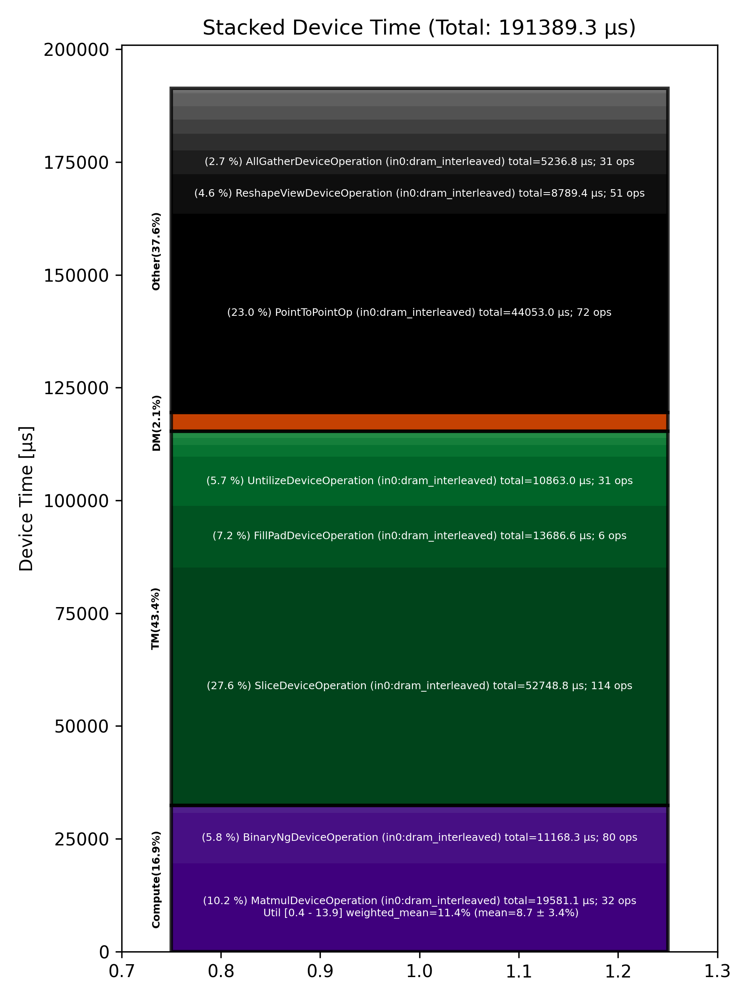

🚀 Performance Report 🚀 ======================== ID Total % Bound OP Code Device Device Time Op-to-Op Gap Cores DRAM DRAM % FLOPs FLOPs % Math Fidelity ------------------------------------------------------------------------------------------------------------------------------------------------------------------------------------- 9 0.0 % UntilizeWithUnpaddingDeviceOperation 0 2 μs 1 INT32 => INT32 56 0.0 % TypecastDeviceOperation 13 2 μs 542 μs 1 INT32 => UINT32 83 0.0 % ReshapeViewDeviceOperation 21 6 μs 126 μs 1 UINT32 => UINT32 123 0.0 % UntilizeWithUnpaddingDeviceOperation 17 2 μs 204 μs 1 UINT32 => UINT32 134 0.0 % EmbeddingsDeviceOperation 3 30 μs 271 μs 1 UINT32, BF16 => BF16 164 0.0 % LayerNormDeviceOperation 26 112 μs 245 μs 1 BF16, BF16 => BF16 213 0.0 % SLOW MatmulDeviceOperation 32 x 2880 x 640 29 44 μs 591 μs 20 47 GB/s 16.5 % 2.7 TFLOPs 6.6 % HiFi2 BF16 x BFP8 => BF16 247 0.0 % NLPCreateQKVHeadsDecodeDeviceOperation 14 5 μs 290 μs 32 BF16 => BF16 259 0.0 % TilizeWithValPaddingDeviceOperation 25 7 μs 151 μs 1 INT32 => INT32 296 0.0 % TypecastDeviceOperation 1 2 μs 269 μs 1 INT32 => FP32 344 0.0 % SLOW MatmulDeviceOperation 32 x 32 x 32 5 7 μs 693 μs 1 2 GB/s 0.6 % 0.0 TFLOPs 0.4 % HiFi3 FP32 x FP32 => FP32 359 0.0 % UnaryNgDeviceOperation 2 3 μs 169 μs 72 FP32 => FP32 417 0.0 % BinaryNgDeviceOperation 8 8 μs 197 μs 72 FP32, FP32 => FP32 442 0.0 % TypecastDeviceOperation 16 2 μs 218 μs 1 FP32 => BF16 455 0.0 % ReshapeViewDeviceOperation 2 5 μs 267 μs 1 BF16 => BF16 485 0.0 % UnaryNgDeviceOperation 27 3 μs 268 μs 72 FP32 => FP32 527 0.0 % BinaryNgDeviceOperation 6 8 μs 268 μs 72 FP32, FP32 => FP32 547 0.0 % TypecastDeviceOperation 25 2 μs 214 μs 1 FP32 => BF16 598 0.0 % ReshapeViewDeviceOperation 15 5 μs 251 μs 1 BF16 => BF16 638 0.0 % ConcatDeviceOperation 11 1 μs 105 μs 2 BF16, BF16 => BF16 654 0.0 % ConcatDeviceOperation 7 1 μs 174 μs 2 BF16, BF16 => BF16 678 0.0 % ShardedToInterleavedDeviceOperation 3 1 μs 251 μs 32 BF16 => BF16 714 0.0 % RotaryEmbeddingDeviceOperation 28 13 μs 137 μs 32 BF16, BF16 => BF16 752 0.0 % SliceDeviceOperation 5 2 μs 129 μs 64 BF16 => BF16 792 0.0 % RepeatDeviceOperation 13 2 μs 263 μs 72 INT32 => INT32 822 0.0 % InterleavedToShardedDeviceOperation 15 1 μs 275 μs 32 BF16 => BF16 841 0.0 % PagedUpdateCacheDeviceOperation 0 5 μs 232 μs 32 BF16, BF16 => BF16 884 0.0 % TilizeWithValPaddingDeviceOperation 22 4 μs 257 μs 1 BF16 => BF16 907 0.0 % TilizeWithValPaddingDeviceOperation 29 7 μs 265 μs 1 INT32 => INT32 957 0.0 % BinaryNgDeviceOperation 19 3 μs 258 μs 72 INT32, INT32 => INT32 990 0.0 % BinaryNgDeviceOperation 11 10 μs 297 μs 72 INT32, INT32 => BF16 1022 0.0 % BinaryNgDeviceOperation 11 6 μs 261 μs 72 BF16, BF16 => BF16 1033 0.0 % TilizeWithValPaddingDeviceOperation 0 7 μs 240 μs 1 INT32 => INT32 1078 0.0 % BinaryNgDeviceOperation 15 10 μs 248 μs 72 INT32, INT32 => BF16 1116 0.0 % BinaryNgDeviceOperation 18 4 μs 276 μs 72 BF16, BF16 => BF16 1130 0.0 % TernaryDeviceOperation 28 25 μs 280 μs 72 BF16, BF16 => BF16 1155 0.0 % PagedUpdateCacheDeviceOperation 25 5 μs 199 μs 32 BF16, BF16 => BF16 1202 0.0 % ShardedToInterleavedDeviceOperation 20 1 μs 247 μs 32 BF16 => BF16 1231 0.0 % RotaryEmbeddingDeviceOperation 6 13 μs 375 μs 32 BF16, BF16 => BF16 1268 0.0 % SliceDeviceOperation 22 2 μs 233 μs 64 BF16 => BF16 1284 0.0 % UntilizeWithUnpaddingDeviceOperation 26 3 μs 252 μs 1 BF16 => BF16 1335 0.0 % RepeatDeviceOperation 14 2 μs 254 μs 72 BF16 => BF16 1360 0.0 % TilizeWithValPaddingDeviceOperation 5 10 μs 262 μs 1 BF16 => BF16 1387 0.0 % SdpaDecodeDeviceOperation 29 19 μs 307 μs 72 BF16, BF16 => BF16 1415 0.0 % InterleavedToShardedDeviceOperation 2 1 μs 162 μs 32 BF16 => BF16 1462 0.0 % NLPConcatHeadsDecodeDeviceOperation 15 4 μs 247 μs 8 BF16 => BF16 1505 0.0 % ShardedToInterleavedDeviceOperation 8 1 μs 262 μs 8 BF16 => BF16 1516 0.0 % ReshapeViewDeviceOperation 30 7 μs 260 μs 16 BF16 => BF16 1540 0.0 % SLOW MatmulDeviceOperation 32 x 512 x 2880 22 15 μs 727 μs 45 114 GB/s 39.5 % 6.3 TFLOPs 6.9 % HiFi2 BF16 x BFP8 => BF16 1585 0.0 % AllGatherDeviceOperation 0 81 μs 500 μs 24 BF16 => BF16 1609 0.0 % FastReduceNCDeviceOperation 0 10 μs 75 μs 72 BF16 => BF16 1641 0.0 % BinaryNgDeviceOperation 0 5 μs 172 μs 72 BF16, BF16 => BF16 1689 0.0 % BinaryNgDeviceOperation 12 5 μs 267 μs 72 BF16, BF16 => BF16 1705 0.0 % LayerNormDeviceOperation 0 112 μs 233 μs 1 BF16, BF16 => BF16 1733 0.0 % SliceDeviceOperation 27 2 μs 145 μs 23 BF16 => BF16 1764 0.0 % UntilizeDeviceOperation 26 15 μs 102 μs 45 BF16 => BF16 1819 0.0 % SliceDeviceOperation 17 2 μs 193 μs 32 BF16 => BF16 1855 0.0 % TilizeWithValPaddingDeviceOperation 10 10 μs 257 μs 1 BF16 => BF16 1860 0.0 % SliceDeviceOperation 26 2 μs 276 μs 23 BF16 => BF16 1892 0.0 % UntilizeDeviceOperation 26 15 μs 353 μs 45 BF16 => BF16 1945 0.0 % SliceDeviceOperation 12 2 μs 90 μs 32 BF16 => BF16 1985 0.0 % TilizeWithValPaddingDeviceOperation 8 10 μs 161 μs 1 BF16 => BF16 1991 0.0 % CopyDeviceOperation 2 2 μs 92 μs 23 BF16 => BF16 2035 0.0 % CopyDeviceOperation 21 2 μs 163 μs 23 BF16 => BF16 2079 0.0 % CopyDeviceOperation 10 2 μs 71 μs 23 BF16 => BF16 2082 0.0 % CopyDeviceOperation 24 2 μs 183 μs 23 BF16 => BF16 2168 0.0 % PointToPointOp 26 28 μs 258 μs 1 BF16, BF16 => BF16 2172 0.0 % PointToPointOp 18 30 μs 837 μs 1 BF16, BF16 => BF16 2182 22.9 % PointToPointOp 30 32 μs 2,035,645 μs 1 BF16, BF16 => BF16 2238 23.1 % PointToPointOp 10 32 μs 2,049,752 μs 1 BF16, BF16 => BF16 2250 0.0 % PointToPointOp 10 28 μs 646 μs 1 BF16, BF16 => BF16 2270 0.0 % PointToPointOp 1 29 μs 780 μs 1 BF16, BF16 => BF16 2333 0.1 % ConcatDeviceOperation 19 3 μs 11,417 μs 72 BF16, BF16 => BF16 2364 0.0 % UntilizeWithUnpaddingDeviceOperation 18 27 μs 381 μs 4 BF16 => BF16 2388 0.0 % RepeatDeviceOperation 22 59 μs 162 μs 72 BF16 => BF16 2424 0.0 % TilizeWithValPaddingDeviceOperation 13 36 μs 217 μs 64 BF16 => BF16 2438 0.0 % SLOW MatmulDeviceOperation b={16} x 128 x 736 x 5760 14 1,245 μs 887 μs 60 76 GB/s 26.3 % 14.0 TFLOPs 11.3 % HiFi2 BF16 x BFP8 => BF16 2481 0.0 % ReduceScatterDeviceOperation 0 405 μs 1 μs 40 BF16 => BF16 2513 0.0 % AllGatherDeviceOperation 0 395 μs 1 μs 40 BF16 => BF16 2548 0.0 % BinaryNgDeviceOperation 22 301 μs 1 μs 72 BF16, BF16 => BF16 2592 0.0 % UntilizeDeviceOperation 9 871 μs 1 μs 45 BF16 => BF16 2606 0.0 % SliceDeviceOperation 7 4,318 μs 1 μs 72 BF16 => BF16 2642 0.0 % TilizeDeviceOperation 20 135 μs 1 μs 64 BF16 => BF16 2675 0.0 % UnaryNgDeviceOperation 21 124 μs 1 μs 72 BF16 => BF16 2698 0.0 % BinaryNgDeviceOperation 28 121 μs 1 μs 72 BF16, BF16 => BF16 2751 0.0 % UntilizeDeviceOperation 10 885 μs 1 μs 45 BF16 => BF16 2782 0.0 % SliceDeviceOperation 11 4,319 μs 1 μs 72 BF16 => BF16 2797 0.0 % TilizeDeviceOperation 31 137 μs 1 μs 64 BF16 => BF16 2844 0.0 % UnaryNgDeviceOperation 18 124 μs 1 μs 72 BF16 => BF16 2879 0.0 % BinaryNgDeviceOperation 10 135 μs 1 μs 72 BF16, BF16 => BF16 2908 0.0 % UnaryNgDeviceOperation 18 217 μs 1 μs 72 BF16 => BF16 2928 0.0 % BinaryNgDeviceOperation 5 165 μs 1 μs 72 BF16, BF16 => BF16 2963 0.0 % BinaryNgDeviceOperation 21 167 μs 1 μs 72 BF16, BF16 => BF16 3004 0.0 % SLOW MatmulDeviceOperation b={16} x 128 x 2880 x 736 16 1,320 μs 1 μs 23 37 GB/s 12.8 % 6.6 TFLOPs 13.9 % HiFi2 BF16 x BFP8 => BF16 3021 0.0 % BinaryNgDeviceOperation 31 45 μs 1 μs 72 BF16, BF16 => BF16 3056 0.0 % ReshapeViewDeviceOperation 5 1,266 μs 1 μs 72 BF16 => BF16 3088 0.0 % TypecastDeviceOperation 5 5 μs 1 μs 72 BF16 => FP32 3136 0.0 % SLOW MatmulDeviceOperation 32 x 2880 x 128 19 43 μs 1 μs 4 18 GB/s 6.1 % 0.6 TFLOPs 6.7 % HiFi2 FP32 x BFP8 => FP32 3155 0.0 % TypecastDeviceOperation 21 3 μs 1 μs 4 FP32 => BF16 3198 0.0 % TopKDeviceOperation 11 80 μs 2 μs 1 BF16 => BF16 3224 0.0 % SliceDeviceOperation 13 1 μs 2 μs 1 BF16 => BF16 3259 0.0 % SliceDeviceOperation 17 1 μs 2 μs 1 UINT16 => UINT16 3273 0.0 % TypecastDeviceOperation 0 2 μs 2 μs 1 UINT16 => FP32 3314 0.0 % ReshapeViewDeviceOperation 20 9 μs 1 μs 32 FP32 => FP32 3360 0.0 % TypecastDeviceOperation 9 4 μs 1 μs 32 FP32 => INT32 3379 0.0 % UntilizeWithUnpaddingDeviceOperation 21 5 μs 1 μs 32 INT32 => INT32 3400 0.0 % UntilizeWithUnpaddingDeviceOperation 1 5 μs 1 μs 32 INT32 => INT32 3456 0.0 % PermuteDeviceOperation 9 4 μs 1 μs 32 INT32 => INT32 3485 0.0 % PermuteDeviceOperation 19 4 μs 1 μs 32 INT32 => INT32 3506 0.0 % ConcatDeviceOperation 20 3 μs 1 μs 64 INT32, INT32 => INT32 3540 0.0 % PermuteDeviceOperation 22 4 μs 1 μs 32 INT32 => INT32 3577 0.0 % TilizeWithValPaddingDeviceOperation 12 9 μs 1 μs 32 INT32 => INT32 3614 0.0 % SoftmaxDeviceOperation 11 25 μs 1 μs 72 BF16 => BF16 3633 0.0 % AllGatherDeviceOperation 0 84 μs 1 μs 24 INT32 => INT32 3665 0.0 % AllGatherDeviceOperation 0 11 μs 1 μs 8 BF16 => BF16 3700 0.0 % ReshapeViewDeviceOperation 22 12 μs 1 μs 16 INT32 => INT32 3732 0.0 % SliceDeviceOperation 22 3 μs 1 μs 16 INT32 => INT32 3760 0.0 % UntilizeWithUnpaddingDeviceOperation 5 15 μs 1 μs 16 INT32 => INT32 3803 0.0 % SliceDeviceOperation 17 8 μs 1 μs 72 INT32 => INT32 3826 0.0 % TilizeWithValPaddingDeviceOperation 20 9 μs 1 μs 16 INT32 => INT32 3871 0.0 % BinaryNgDeviceOperation 10 12 μs 1 μs 72 INT32, INT32 => INT32 3904 0.0 % BinaryNgDeviceOperation 9 5 μs 1 μs 72 INT32, INT32 => INT32 3921 0.0 % ReshapeViewDeviceOperation 4 7 μs 1 μs 16 INT32 => INT32 3964 0.0 % ReshapeViewDeviceOperation 18 5 μs 1 μs 16 BF16 => BF16 3985 0.0 % UntilizeWithUnpaddingDeviceOperation 4 12 μs 2 μs 1 INT32 => INT32 4030 0.0 % SliceDeviceOperation 11 1 μs 3 μs 1 INT32 => INT32 4059 0.0 % TilizeWithValPaddingDeviceOperation 17 44 μs 2 μs 1 INT32 => INT32 4089 0.0 % UntilizeWithUnpaddingDeviceOperation 12 10 μs 2 μs 1 BF16 => BF16 4120 0.0 % SliceDeviceOperation 13 1 μs 3 μs 1 BF16 => BF16 4149 0.0 % TilizeWithValPaddingDeviceOperation 23 23 μs 2 μs 1 BF16 => BF16 4173 0.0 % UntilizeWithUnpaddingDeviceOperation 31 7 μs 2 μs 1 INT32 => INT32 4208 0.0 % UntilizeWithUnpaddingDeviceOperation 5 6 μs 2 μs 1 BF16 => BF16 4227 0.0 % ScatterDeviceOperation 25 309 μs 3 μs 1 BF16, INT32 => BF16 4269 0.0 % UntilizeWithUnpaddingDeviceOperation 31 12 μs 2 μs 1 INT32 => INT32 4314 0.0 % SliceDeviceOperation 16 1 μs 3 μs 1 INT32 => INT32 4349 0.0 % TilizeWithValPaddingDeviceOperation 19 44 μs 2 μs 1 INT32 => INT32 4380 0.0 % UntilizeWithUnpaddingDeviceOperation 18 10 μs 2 μs 1 BF16 => BF16 4405 0.0 % SliceDeviceOperation 23 1 μs 3 μs 1 BF16 => BF16 4444 0.0 % TilizeWithValPaddingDeviceOperation 18 23 μs 2 μs 1 BF16 => BF16 4466 0.0 % UntilizeWithUnpaddingDeviceOperation 20 7 μs 2 μs 1 INT32 => INT32 4492 0.0 % UntilizeWithUnpaddingDeviceOperation 30 6 μs 2 μs 1 BF16 => BF16 4519 0.0 % ScatterDeviceOperation 2 309 μs 3 μs 1 BF16, INT32 => BF16 4553 0.0 % TilizeWithValPaddingDeviceOperation 0 32 μs 1 μs 64 BF16 => BF16 4607 0.0 % ReshapeViewDeviceOperation 10 26 μs 1 μs 16 BF16 => BF16 4633 0.0 % UntilizeDeviceOperation 12 6 μs 1 μs 4 BF16 => BF16 4660 0.0 % MeshPartitionDeviceOperation 12 2 μs 214 μs 72 BF16 => BF16 4705 0.0 % TilizeWithValPaddingDeviceOperation 8 4 μs 189 μs 4 BF16 => BF16 4710 0.0 % TransposeDeviceOperation 3 2 μs 183 μs 72 BF16 => BF16 4766 0.0 % ReshapeViewDeviceOperation 11 75 μs 261 μs 72 BF16 => BF16 4786 0.0 % BinaryNgDeviceOperation 20 877 μs 188 μs 72 BF16, BF16 => BF16 4812 0.0 % FillPadDeviceOperation 30 2,280 μs 1 μs 72 BF16 => BF16 4845 0.0 % FastReduceNCDeviceOperation 31 483 μs 1 μs 72 BF16 => BF16 4871 0.0 % SliceDeviceOperation 2 63 μs 1 μs 72 BF16 => BF16 4913 0.0 % ReduceScatterDeviceOperation 0 181 μs 1 μs 24 BF16 => BF16 4945 0.0 % AllGatherDeviceOperation 0 285 μs 1 μs 40 BF16 => BF16 4969 0.0 % SliceDeviceOperation 0 17 μs 1 μs 72 BF16 => BF16 5004 0.0 % SliceDeviceOperation 30 17 μs 1 μs 72 BF16 => BF16 5047 0.0 % SliceDeviceOperation 14 17 μs 1 μs 72 BF16 => BF16 5062 0.0 % SliceDeviceOperation 3 17 μs 1 μs 72 BF16 => BF16 5110 0.0 % CopyDeviceOperation 15 17 μs 1 μs 72 BF16 => BF16 5133 0.0 % CopyDeviceOperation 31 16 μs 1 μs 72 BF16 => BF16 5176 0.0 % CopyDeviceOperation 13 16 μs 1 μs 72 BF16 => BF16 5190 0.0 % CopyDeviceOperation 3 17 μs 1 μs 72 BF16 => BF16 5222 0.0 % PointToPointOp 16 1,403 μs 5 μs 1 BF16, BF16 => BF16 5224 0.0 % PointToPointOp 24 722 μs 3 μs 1 BF16, BF16 => BF16 5228 0.0 % PointToPointOp 16 1,083 μs 5 μs 1 BF16, BF16 => BF16 5312 0.0 % PointToPointOp 23 1,799 μs 5 μs 1 BF16, BF16 => BF16 5328 0.0 % PointToPointOp 7 1,080 μs 4 μs 1 BF16, BF16 => BF16 5330 0.0 % PointToPointOp 11 1,080 μs 5 μs 1 BF16, BF16 => BF16 5441 0.0 % UntilizeWithUnpaddingDeviceOperation 8 16 μs 1 μs 32 BF16 => BF16 5473 0.0 % UntilizeWithUnpaddingDeviceOperation 8 17 μs 1 μs 32 BF16 => BF16 5497 0.0 % UntilizeWithUnpaddingDeviceOperation 12 16 μs 1 μs 32 BF16 => BF16 5513 0.0 % UntilizeWithUnpaddingDeviceOperation 0 16 μs 1 μs 32 BF16 => BF16 5561 0.0 % ConcatDeviceOperation 12 4 μs 1 μs 32 BF16, BF16 => BF16 5573 0.0 % TilizeWithValPaddingDeviceOperation 27 182 μs 105 μs 45 BF16 => BF16 5609 0.0 % ReshapeViewDeviceOperation 0 55 μs 1 μs 72 BF16 => BF16 5665 0.0 % BinaryNgDeviceOperation 8 5 μs 1 μs 72 BF16, BF16 => BF16 5669 0.0 % LayerNormDeviceOperation 27 112 μs 256 μs 1 BF16, BF16 => BF16 5716 0.0 % SLOW MatmulDeviceOperation 32 x 2880 x 640 12 45 μs 1 μs 20 46 GB/s 15.9 % 2.6 TFLOPs 6.4 % HiFi2 BF16 x BFP8 => BF16 5753 0.0 % NLPCreateQKVHeadsDecodeDeviceOperation 12 5 μs 19 μs 32 BF16 => BF16 5771 0.0 % ShardedToInterleavedDeviceOperation 29 1 μs 123 μs 32 BF16 => BF16 5822 0.0 % RotaryEmbeddingDeviceOperation 11 13 μs 235 μs 32 BF16, BF16 => BF16 5832 0.0 % SliceDeviceOperation 1 2 μs 251 μs 64 BF16 => BF16 5881 0.0 % InterleavedToShardedDeviceOperation 12 1 μs 269 μs 32 BF16 => BF16 5900 0.0 % PagedUpdateCacheDeviceOperation 30 5 μs 225 μs 32 BF16, BF16 => BF16 5948 0.0 % TernaryDeviceOperation 18 25 μs 292 μs 72 BF16, BF16 => BF16 5975 0.0 % PagedUpdateCacheDeviceOperation 14 5 μs 219 μs 32 BF16, BF16 => BF16 5998 0.0 % ShardedToInterleavedDeviceOperation 7 1 μs 241 μs 32 BF16 => BF16 6032 0.0 % RotaryEmbeddingDeviceOperation 5 13 μs 115 μs 32 BF16, BF16 => BF16 6056 0.0 % SliceDeviceOperation 1 2 μs 139 μs 64 BF16 => BF16 6102 0.0 % UntilizeWithUnpaddingDeviceOperation 15 3 μs 95 μs 1 BF16 => BF16 6130 0.0 % RepeatDeviceOperation 20 2 μs 164 μs 72 BF16 => BF16 6151 0.0 % TilizeWithValPaddingDeviceOperation 2 10 μs 117 μs 1 BF16 => BF16 6192 0.0 % SdpaDecodeDeviceOperation 5 19 μs 232 μs 72 BF16, BF16 => BF16 6236 0.0 % InterleavedToShardedDeviceOperation 18 1 μs 124 μs 32 BF16 => BF16 6243 0.0 % NLPConcatHeadsDecodeDeviceOperation 25 4 μs 388 μs 8 BF16 => BF16 6289 0.0 % ShardedToInterleavedDeviceOperation 4 1 μs 302 μs 8 BF16 => BF16 6330 0.0 % ReshapeViewDeviceOperation 16 7 μs 398 μs 16 BF16 => BF16 6349 0.0 % SLOW MatmulDeviceOperation 32 x 512 x 2880 23 15 μs 683 μs 45 114 GB/s 39.5 % 6.3 TFLOPs 6.9 % HiFi2 BF16 x BFP8 => BF16 6385 0.0 % AllGatherDeviceOperation 0 82 μs 485 μs 24 BF16 => BF16 6402 0.0 % FastReduceNCDeviceOperation 24 10 μs 62 μs 72 BF16 => BF16 6446 0.0 % BinaryNgDeviceOperation 7 5 μs 186 μs 72 BF16, BF16 => BF16 6474 0.0 % BinaryNgDeviceOperation 28 5 μs 242 μs 72 BF16, BF16 => BF16 6509 0.0 % LayerNormDeviceOperation 31 112 μs 231 μs 1 BF16, BF16 => BF16 6546 0.0 % SliceDeviceOperation 20 2 μs 134 μs 23 BF16 => BF16 6586 0.0 % UntilizeDeviceOperation 16 15 μs 104 μs 45 BF16 => BF16 6622 0.0 % SliceDeviceOperation 11 2 μs 177 μs 32 BF16 => BF16 6628 0.0 % TilizeWithValPaddingDeviceOperation 26 10 μs 254 μs 1 BF16 => BF16 6672 0.0 % SliceDeviceOperation 5 2 μs 95 μs 23 BF16 => BF16 6690 0.0 % UntilizeDeviceOperation 24 15 μs 176 μs 45 BF16 => BF16 6734 0.0 % SliceDeviceOperation 7 2 μs 249 μs 32 BF16 => BF16 6784 0.0 % TilizeWithValPaddingDeviceOperation 9 10 μs 85 μs 1 BF16 => BF16 6817 0.0 % CopyDeviceOperation 8 2 μs 185 μs 23 BF16 => BF16 6846 0.0 % CopyDeviceOperation 11 2 μs 250 μs 23 BF16 => BF16 6867 0.0 % CopyDeviceOperation 21 2 μs 74 μs 23 BF16 => BF16 6904 0.0 % CopyDeviceOperation 13 2 μs 185 μs 23 BF16 => BF16 6920 0.0 % PointToPointOp 24 28 μs 253 μs 1 BF16, BF16 => BF16 6924 0.0 % PointToPointOp 16 30 μs 742 μs 1 BF16, BF16 => BF16 6974 0.0 % PointToPointOp 26 35 μs 773 μs 1 BF16, BF16 => BF16 7026 0.0 % PointToPointOp 11 27 μs 439 μs 1 BF16, BF16 => BF16 7052 0.0 % PointToPointOp 2 31 μs 617 μs 1 BF16, BF16 => BF16 7062 0.2 % PointToPointOp 9 32 μs 14,903 μs 1 BF16, BF16 => BF16 7131 0.2 % ConcatDeviceOperation 17 3 μs 15,449 μs 72 BF16, BF16 => BF16 7142 0.0 % UntilizeWithUnpaddingDeviceOperation 3 28 μs 138 μs 4 BF16 => BF16 7194 0.0 % RepeatDeviceOperation 16 58 μs 133 μs 72 BF16 => BF16 7204 0.0 % TilizeWithValPaddingDeviceOperation 26 36 μs 209 μs 64 BF16 => BF16 7265 0.0 % SLOW MatmulDeviceOperation b={16} x 128 x 736 x 5760 11 1,243 μs 701 μs 60 76 GB/s 26.4 % 14.0 TFLOPs 11.3 % HiFi2 BF16 x BFP8 => BF16 7281 0.0 % ReduceScatterDeviceOperation 0 402 μs 1 μs 40 BF16 => BF16 7313 0.0 % AllGatherDeviceOperation 0 395 μs 1 μs 40 BF16 => BF16 7341 0.0 % BinaryNgDeviceOperation 31 303 μs 1 μs 72 BF16, BF16 => BF16 7364 0.0 % UntilizeDeviceOperation 26 870 μs 1 μs 45 BF16 => BF16 7423 0.0 % SliceDeviceOperation 10 4,319 μs 1 μs 72 BF16 => BF16 7446 0.0 % TilizeDeviceOperation 15 134 μs 1 μs 64 BF16 => BF16 7472 0.0 % UnaryNgDeviceOperation 5 124 μs 1 μs 72 BF16 => BF16 7495 0.0 % BinaryNgDeviceOperation 2 123 μs 1 μs 72 BF16, BF16 => BF16 7524 0.0 % UntilizeDeviceOperation 26 879 μs 1 μs 45 BF16 => BF16 7580 0.0 % SliceDeviceOperation 18 4,317 μs 1 μs 72 BF16 => BF16 7613 0.0 % TilizeDeviceOperation 19 134 μs 1 μs 64 BF16 => BF16 7628 0.0 % UnaryNgDeviceOperation 30 125 μs 1 μs 72 BF16 => BF16 7678 0.0 % BinaryNgDeviceOperation 11 130 μs 1 μs 72 BF16, BF16 => BF16 7682 0.0 % UnaryNgDeviceOperation 24 217 μs 1 μs 72 BF16 => BF16 7723 0.0 % BinaryNgDeviceOperation 29 165 μs 1 μs 72 BF16, BF16 => BF16 7752 0.0 % BinaryNgDeviceOperation 1 166 μs 1 μs 72 BF16, BF16 => BF16 7778 0.0 % SLOW MatmulDeviceOperation b={16} x 128 x 2880 x 736 8 1,320 μs 1 μs 23 37 GB/s 12.8 % 6.6 TFLOPs 13.9 % HiFi2 BF16 x BFP8 => BF16 7833 0.0 % BinaryNgDeviceOperation 12 44 μs 1 μs 72 BF16, BF16 => BF16 7856 0.0 % ReshapeViewDeviceOperation 5 1,279 μs 1 μs 72 BF16 => BF16 7885 0.0 % TypecastDeviceOperation 31 5 μs 1 μs 72 BF16 => FP32 7937 0.0 % SLOW MatmulDeviceOperation 32 x 2880 x 128 11 43 μs 1 μs 4 18 GB/s 6.1 % 0.6 TFLOPs 6.7 % HiFi2 FP32 x BFP8 => FP32 7965 0.0 % TypecastDeviceOperation 19 3 μs 1 μs 4 FP32 => BF16 7999 0.0 % TopKDeviceOperation 10 80 μs 2 μs 1 BF16 => BF16 8007 0.0 % SliceDeviceOperation 2 1 μs 2 μs 1 BF16 => BF16 8039 0.0 % SliceDeviceOperation 2 1 μs 2 μs 1 UINT16 => UINT16 8080 0.0 % TypecastDeviceOperation 5 2 μs 2 μs 1 UINT16 => FP32 8127 0.0 % ReshapeViewDeviceOperation 10 9 μs 1 μs 32 FP32 => FP32 8153 0.0 % TypecastDeviceOperation 12 4 μs 1 μs 32 FP32 => INT32 8178 0.0 % UntilizeWithUnpaddingDeviceOperation 20 5 μs 1 μs 32 INT32 => INT32 8201 0.0 % UntilizeWithUnpaddingDeviceOperation 0 5 μs 1 μs 32 INT32 => INT32 8233 0.0 % PermuteDeviceOperation 0 4 μs 1 μs 32 INT32 => INT32 8264 0.0 % PermuteDeviceOperation 1 4 μs 1 μs 32 INT32 => INT32 8320 0.0 % ConcatDeviceOperation 9 3 μs 1 μs 64 INT32, INT32 => INT32 8333 0.0 % PermuteDeviceOperation 31 4 μs 1 μs 32 INT32 => INT32 8379 0.0 % TilizeWithValPaddingDeviceOperation 17 9 μs 1 μs 32 INT32 => INT32 8388 0.0 % SoftmaxDeviceOperation 26 25 μs 1 μs 72 BF16 => BF16 8433 0.0 % AllGatherDeviceOperation 0 87 μs 1 μs 24 INT32 => INT32 8465 0.0 % AllGatherDeviceOperation 0 11 μs 1 μs 8 BF16 => BF16 8484 0.0 % ReshapeViewDeviceOperation 26 11 μs 1 μs 16 INT32 => INT32 8525 0.0 % SliceDeviceOperation 31 3 μs 1 μs 16 INT32 => INT32 8560 0.0 % UntilizeWithUnpaddingDeviceOperation 5 15 μs 1 μs 16 INT32 => INT32 8583 0.0 % SliceDeviceOperation 2 8 μs 1 μs 72 INT32 => INT32 8635 0.0 % TilizeWithValPaddingDeviceOperation 17 9 μs 1 μs 16 INT32 => INT32 8655 0.0 % BinaryNgDeviceOperation 6 12 μs 1 μs 72 INT32, INT32 => INT32 8680 0.0 % BinaryNgDeviceOperation 1 5 μs 1 μs 72 INT32, INT32 => INT32 8736 0.0 % ReshapeViewDeviceOperation 9 7 μs 1 μs 16 INT32 => INT32 8748 0.0 % ReshapeViewDeviceOperation 30 5 μs 1 μs 16 BF16 => BF16 8780 0.0 % UntilizeWithUnpaddingDeviceOperation 30 12 μs 2 μs 1 INT32 => INT32 8817 0.0 % SliceDeviceOperation 4 1 μs 3 μs 1 INT32 => INT32 8864 0.0 % TilizeWithValPaddingDeviceOperation 9 44 μs 2 μs 1 INT32 => INT32 8874 0.0 % UntilizeWithUnpaddingDeviceOperation 28 10 μs 2 μs 1 BF16 => BF16 8922 0.0 % SliceDeviceOperation 16 1 μs 3 μs 1 BF16 => BF16 8938 0.0 % TilizeWithValPaddingDeviceOperation 28 23 μs 2 μs 1 BF16 => BF16 8973 0.0 % UntilizeWithUnpaddingDeviceOperation 31 7 μs 2 μs 1 INT32 => INT32 9001 0.0 % UntilizeWithUnpaddingDeviceOperation 0 6 μs 2 μs 1 BF16 => BF16 9048 0.0 % ScatterDeviceOperation 13 309 μs 3 μs 1 BF16, INT32 => BF16 9085 0.0 % UntilizeWithUnpaddingDeviceOperation 19 12 μs 2 μs 1 INT32 => INT32 9092 0.0 % SliceDeviceOperation 26 1 μs 3 μs 1 INT32 => INT32 9149 0.0 % TilizeWithValPaddingDeviceOperation 19 44 μs 2 μs 1 INT32 => INT32 9155 0.0 % UntilizeWithUnpaddingDeviceOperation 25 10 μs 2 μs 1 BF16 => BF16 9205 0.0 % SliceDeviceOperation 23 1 μs 3 μs 1 BF16 => BF16 9237 0.0 % TilizeWithValPaddingDeviceOperation 23 23 μs 2 μs 1 BF16 => BF16 9261 0.0 % UntilizeWithUnpaddingDeviceOperation 31 7 μs 2 μs 1 INT32 => INT32 9290 0.0 % UntilizeWithUnpaddingDeviceOperation 28 6 μs 2 μs 1 BF16 => BF16 9317 0.0 % ScatterDeviceOperation 27 309 μs 3 μs 1 BF16, INT32 => BF16 9348 0.0 % TilizeWithValPaddingDeviceOperation 26 32 μs 1 μs 64 BF16 => BF16 9384 0.0 % ReshapeViewDeviceOperation 1 25 μs 1 μs 16 BF16 => BF16 9415 0.0 % UntilizeDeviceOperation 2 6 μs 1 μs 4 BF16 => BF16 9447 0.0 % MeshPartitionDeviceOperation 10 3 μs 1 μs 72 BF16 => BF16 9501 0.0 % TilizeWithValPaddingDeviceOperation 19 6 μs 1 μs 4 BF16 => BF16 9524 0.0 % TransposeDeviceOperation 22 2 μs 115 μs 72 BF16 => BF16 9556 0.0 % ReshapeViewDeviceOperation 22 76 μs 276 μs 72 BF16 => BF16 9572 0.0 % BinaryNgDeviceOperation 26 891 μs 194 μs 72 BF16, BF16 => BF16 9610 0.0 % FillPadDeviceOperation 28 2,281 μs 1 μs 72 BF16 => BF16 9648 0.0 % FastReduceNCDeviceOperation 5 483 μs 1 μs 72 BF16 => BF16 9673 0.0 % SliceDeviceOperation 0 62 μs 1 μs 72 BF16 => BF16 9713 0.0 % ReduceScatterDeviceOperation 0 184 μs 1 μs 24 BF16 => BF16 9745 0.0 % AllGatherDeviceOperation 0 286 μs 1 μs 40 BF16 => BF16 9764 0.0 % SliceDeviceOperation 26 17 μs 1 μs 72 BF16 => BF16 9817 0.0 % SliceDeviceOperation 12 16 μs 1 μs 72 BF16 => BF16 9838 0.0 % SliceDeviceOperation 7 17 μs 1 μs 72 BF16 => BF16 9862 0.0 % SliceDeviceOperation 3 17 μs 1 μs 72 BF16 => BF16 9894 0.0 % CopyDeviceOperation 3 17 μs 1 μs 72 BF16 => BF16 9930 0.0 % CopyDeviceOperation 28 17 μs 1 μs 72 BF16 => BF16 9966 0.0 % CopyDeviceOperation 7 17 μs 1 μs 72 BF16 => BF16 10005 0.0 % CopyDeviceOperation 23 16 μs 1 μs 72 BF16 => BF16 10022 0.0 % PointToPointOp 16 1,427 μs 5 μs 1 BF16, BF16 => BF16 10024 0.0 % PointToPointOp 24 723 μs 3 μs 1 BF16, BF16 => BF16 10028 0.0 % PointToPointOp 16 1,082 μs 5 μs 1 BF16, BF16 => BF16 10106 0.0 % PointToPointOp 19 1,079 μs 5 μs 1 BF16, BF16 => BF16 10112 0.0 % PointToPointOp 23 1,799 μs 5 μs 1 BF16, BF16 => BF16 10128 0.0 % PointToPointOp 7 1,082 μs 4 μs 1 BF16, BF16 => BF16 10230 0.1 % UntilizeWithUnpaddingDeviceOperation 15 16 μs 6,614 μs 32 BF16 => BF16 10257 0.0 % UntilizeWithUnpaddingDeviceOperation 4 16 μs 1 μs 32 BF16 => BF16 10296 0.0 % UntilizeWithUnpaddingDeviceOperation 13 16 μs 1 μs 32 BF16 => BF16 10321 0.0 % UntilizeWithUnpaddingDeviceOperation 4 17 μs 1 μs 32 BF16 => BF16 10356 0.0 % ConcatDeviceOperation 22 4 μs 179 μs 32 BF16, BF16 => BF16 10395 0.0 % TilizeWithValPaddingDeviceOperation 17 182 μs 136 μs 45 BF16 => BF16 10409 0.0 % ReshapeViewDeviceOperation 0 55 μs 1 μs 72 BF16 => BF16 10462 0.0 % BinaryNgDeviceOperation 11 5 μs 204 μs 72 BF16, BF16 => BF16 10482 0.0 % LayerNormDeviceOperation 20 112 μs 250 μs 1 BF16, BF16 => BF16 10498 0.0 % SLOW MatmulDeviceOperation 32 x 2880 x 640 8 45 μs 1 μs 20 46 GB/s 15.8 % 2.6 TFLOPs 6.3 % HiFi2 BF16 x BFP8 => BF16 10545 0.0 % NLPCreateQKVHeadsDecodeDeviceOperation 4 6 μs 1 μs 32 BF16 => BF16 10585 0.0 % ShardedToInterleavedDeviceOperation 12 2 μs 1 μs 32 BF16 => BF16 10605 0.0 % RotaryEmbeddingDeviceOperation 31 13 μs 225 μs 32 BF16, BF16 => BF16 10649 0.0 % SliceDeviceOperation 12 3 μs 1 μs 64 BF16 => BF16 10669 0.0 % InterleavedToShardedDeviceOperation 31 1 μs 278 μs 32 BF16 => BF16 10695 0.0 % PagedUpdateCacheDeviceOperation 2 5 μs 230 μs 32 BF16, BF16 => BF16 10733 0.0 % PagedUpdateCacheDeviceOperation 31 5 μs 241 μs 32 BF16, BF16 => BF16 10764 0.0 % ShardedToInterleavedDeviceOperation 30 1 μs 259 μs 32 BF16 => BF16 10812 0.0 % RotaryEmbeddingDeviceOperation 18 13 μs 114 μs 32 BF16, BF16 => BF16 10848 0.0 % SliceDeviceOperation 9 2 μs 141 μs 64 BF16 => BF16 10866 0.0 % SdpaDecodeDeviceOperation 20 18 μs 207 μs 72 BF16, BF16 => BF16 10889 0.0 % InterleavedToShardedDeviceOperation 0 1 μs 114 μs 32 BF16 => BF16 10927 0.0 % NLPConcatHeadsDecodeDeviceOperation 6 4 μs 212 μs 8 BF16 => BF16 10959 0.0 % ShardedToInterleavedDeviceOperation 6 1 μs 244 μs 8 BF16 => BF16 10998 0.0 % ReshapeViewDeviceOperation 15 7 μs 107 μs 16 BF16 => BF16 11012 0.0 % SLOW MatmulDeviceOperation 32 x 512 x 2880 22 15 μs 532 μs 45 114 GB/s 39.4 % 6.3 TFLOPs 6.9 % HiFi2 BF16 x BFP8 => BF16 11057 0.0 % AllGatherDeviceOperation 0 80 μs 505 μs 24 BF16 => BF16 11089 0.0 % FastReduceNCDeviceOperation 4 10 μs 92 μs 72 BF16 => BF16 11119 0.0 % BinaryNgDeviceOperation 6 5 μs 184 μs 72 BF16, BF16 => BF16 11153 0.0 % BinaryNgDeviceOperation 4 5 μs 239 μs 72 BF16, BF16 => BF16 11191 0.0 % LayerNormDeviceOperation 14 112 μs 234 μs 1 BF16, BF16 => BF16 11220 0.0 % SliceDeviceOperation 22 2 μs 149 μs 23 BF16 => BF16 11234 0.0 % UntilizeDeviceOperation 24 15 μs 101 μs 45 BF16 => BF16 11284 0.0 % SliceDeviceOperation 22 2 μs 171 μs 32 BF16 => BF16 11327 0.0 % TilizeWithValPaddingDeviceOperation 10 10 μs 266 μs 1 BF16 => BF16 11332 0.0 % SliceDeviceOperation 26 2 μs 253 μs 23 BF16 => BF16 11390 0.0 % UntilizeDeviceOperation 11 15 μs 272 μs 45 BF16 => BF16 11403 0.0 % SliceDeviceOperation 29 2 μs 323 μs 32 BF16 => BF16 11453 0.0 % TilizeWithValPaddingDeviceOperation 19 10 μs 85 μs 1 BF16 => BF16 11471 0.0 % CopyDeviceOperation 6 2 μs 151 μs 23 BF16 => BF16 11501 0.0 % CopyDeviceOperation 31 2 μs 290 μs 23 BF16 => BF16 11526 0.0 % CopyDeviceOperation 3 2 μs 216 μs 23 BF16 => BF16 11563 0.0 % CopyDeviceOperation 29 2 μs 78 μs 23 BF16 => BF16 11604 0.0 % PointToPointOp 24 31 μs 524 μs 1 BF16, BF16 => BF16 11662 0.1 % PointToPointOp 19 32 μs 7,944 μs 1 BF16, BF16 => BF16 11664 0.0 % PointToPointOp 27 28 μs 148 μs 1 BF16, BF16 => BF16 11716 0.0 % PointToPointOp 10 29 μs 782 μs 1 BF16, BF16 => BF16 11766 0.0 % PointToPointOp 0 30 μs 642 μs 1 BF16, BF16 => BF16 11770 0.0 % PointToPointOp 8 28 μs 736 μs 1 BF16, BF16 => BF16 11804 0.1 % ConcatDeviceOperation 18 3 μs 12,340 μs 72 BF16, BF16 => BF16 11834 0.0 % UntilizeWithUnpaddingDeviceOperation 16 28 μs 143 μs 4 BF16 => BF16 11851 0.0 % RepeatDeviceOperation 29 58 μs 139 μs 72 BF16 => BF16 11876 0.0 % TilizeWithValPaddingDeviceOperation 26 35 μs 208 μs 64 BF16 => BF16 11931 0.0 % SLOW MatmulDeviceOperation b={16} x 128 x 736 x 5760 4 1,244 μs 971 μs 60 76 GB/s 26.4 % 14.0 TFLOPs 11.3 % HiFi2 BF16 x BFP8 => BF16 11953 0.0 % ReduceScatterDeviceOperation 0 401 μs 1 μs 40 BF16 => BF16 11985 0.0 % AllGatherDeviceOperation 0 395 μs 1 μs 40 BF16 => BF16 12017 0.0 % BinaryNgDeviceOperation 4 301 μs 1 μs 72 BF16, BF16 => BF16 12063 0.0 % UntilizeDeviceOperation 10 866 μs 1 μs 45 BF16 => BF16 12074 0.0 % SliceDeviceOperation 28 4,317 μs 1 μs 72 BF16 => BF16 12126 0.0 % TilizeDeviceOperation 11 134 μs 1 μs 64 BF16 => BF16 12131 0.0 % UnaryNgDeviceOperation 25 124 μs 1 μs 72 BF16 => BF16 12188 0.0 % BinaryNgDeviceOperation 18 120 μs 1 μs 72 BF16, BF16 => BF16 12223 0.0 % UntilizeDeviceOperation 10 868 μs 1 μs 45 BF16 => BF16 12242 0.0 % SliceDeviceOperation 20 4,318 μs 1 μs 72 BF16 => BF16 12282 0.0 % TilizeDeviceOperation 16 133 μs 1 μs 64 BF16 => BF16 12303 0.0 % UnaryNgDeviceOperation 6 124 μs 1 μs 72 BF16 => BF16 12326 0.0 % BinaryNgDeviceOperation 3 131 μs 1 μs 72 BF16, BF16 => BF16 12385 0.0 % UnaryNgDeviceOperation 8 220 μs 1 μs 72 BF16 => BF16 12388 0.0 % BinaryNgDeviceOperation 26 166 μs 1 μs 72 BF16, BF16 => BF16 12441 0.0 % BinaryNgDeviceOperation 12 166 μs 1 μs 72 BF16, BF16 => BF16 12476 0.0 % SLOW MatmulDeviceOperation b={16} x 128 x 2880 x 736 16 1,321 μs 1 μs 23 37 GB/s 12.8 % 6.6 TFLOPs 13.9 % HiFi2 BF16 x BFP8 => BF16 12494 0.0 % BinaryNgDeviceOperation 7 44 μs 1 μs 72 BF16, BF16 => BF16 12528 0.0 % ReshapeViewDeviceOperation 5 1,274 μs 1 μs 72 BF16 => BF16 12553 0.0 % TypecastDeviceOperation 0 5 μs 1 μs 72 BF16 => FP32 12590 0.0 % SLOW MatmulDeviceOperation 32 x 2880 x 128 6 43 μs 1 μs 4 18 GB/s 6.1 % 0.6 TFLOPs 6.7 % HiFi2 FP32 x BFP8 => FP32 12638 0.0 % TypecastDeviceOperation 11 3 μs 1 μs 4 FP32 => BF16 12649 0.0 % TopKDeviceOperation 0 80 μs 2 μs 1 BF16 => BF16 12681 0.0 % SliceDeviceOperation 0 1 μs 2 μs 1 BF16 => BF16 12708 0.0 % SliceDeviceOperation 26 1 μs 2 μs 1 UINT16 => UINT16 12759 0.0 % TypecastDeviceOperation 14 2 μs 2 μs 1 UINT16 => FP32 12770 0.0 % ReshapeViewDeviceOperation 24 9 μs 1 μs 32 FP32 => FP32 12832 0.0 % TypecastDeviceOperation 9 4 μs 1 μs 32 FP32 => INT32 12846 0.0 % UntilizeWithUnpaddingDeviceOperation 7 5 μs 1 μs 32 INT32 => INT32 12886 0.0 % UntilizeWithUnpaddingDeviceOperation 15 5 μs 1 μs 32 INT32 => INT32 12927 0.0 % PermuteDeviceOperation 10 4 μs 1 μs 32 INT32 => INT32 12931 0.0 % PermuteDeviceOperation 25 4 μs 1 μs 32 INT32 => INT32 12963 0.0 % ConcatDeviceOperation 25 3 μs 1 μs 64 INT32, INT32 => INT32 13011 0.0 % PermuteDeviceOperation 21 4 μs 1 μs 32 INT32 => INT32 13043 0.0 % TilizeWithValPaddingDeviceOperation 21 9 μs 1 μs 32 INT32 => INT32 13073 0.0 % SoftmaxDeviceOperation 4 25 μs 1 μs 72 BF16 => BF16 13105 0.0 % AllGatherDeviceOperation 0 83 μs 1 μs 24 INT32 => INT32 13137 0.0 % AllGatherDeviceOperation 0 11 μs 1 μs 8 BF16 => BF16 13156 0.0 % ReshapeViewDeviceOperation 26 12 μs 1 μs 16 INT32 => INT32 13206 0.0 % SliceDeviceOperation 15 3 μs 1 μs 16 INT32 => INT32 13246 0.0 % UntilizeWithUnpaddingDeviceOperation 11 15 μs 1 μs 16 INT32 => INT32 13265 0.0 % SliceDeviceOperation 4 8 μs 1 μs 72 INT32 => INT32 13309 0.0 % TilizeWithValPaddingDeviceOperation 19 9 μs 1 μs 16 INT32 => INT32 13334 0.0 % BinaryNgDeviceOperation 15 12 μs 1 μs 72 INT32, INT32 => INT32 13361 0.0 % BinaryNgDeviceOperation 4 5 μs 1 μs 72 INT32, INT32 => INT32 13408 0.0 % ReshapeViewDeviceOperation 9 7 μs 1 μs 16 INT32 => INT32 13432 0.0 % ReshapeViewDeviceOperation 13 5 μs 1 μs 16 BF16 => BF16 13446 0.0 % UntilizeWithUnpaddingDeviceOperation 3 12 μs 2 μs 1 INT32 => INT32 13477 0.0 % SliceDeviceOperation 27 1 μs 3 μs 1 INT32 => INT32 13533 0.0 % TilizeWithValPaddingDeviceOperation 19 44 μs 2 μs 1 INT32 => INT32 13546 0.0 % UntilizeWithUnpaddingDeviceOperation 28 10 μs 2 μs 1 BF16 => BF16 13593 0.0 % SliceDeviceOperation 12 1 μs 3 μs 1 BF16 => BF16 13615 0.0 % TilizeWithValPaddingDeviceOperation 6 23 μs 2 μs 1 BF16 => BF16 13655 0.0 % UntilizeWithUnpaddingDeviceOperation 14 7 μs 2 μs 1 INT32 => INT32 13667 0.0 % UntilizeWithUnpaddingDeviceOperation 25 6 μs 2 μs 1 BF16 => BF16 13720 0.0 % ScatterDeviceOperation 13 309 μs 3 μs 1 BF16, INT32 => BF16 13758 0.0 % UntilizeWithUnpaddingDeviceOperation 11 12 μs 2 μs 1 INT32 => INT32 13791 0.0 % SliceDeviceOperation 10 1 μs 3 μs 1 INT32 => INT32 13821 0.0 % TilizeWithValPaddingDeviceOperation 19 44 μs 2 μs 1 INT32 => INT32 13851 0.0 % UntilizeWithUnpaddingDeviceOperation 17 10 μs 2 μs 1 BF16 => BF16 13860 0.0 % SliceDeviceOperation 26 1 μs 3 μs 1 BF16 => BF16 13916 0.0 % TilizeWithValPaddingDeviceOperation 18 23 μs 2 μs 1 BF16 => BF16 13938 0.0 % UntilizeWithUnpaddingDeviceOperation 20 7 μs 2 μs 1 INT32 => INT32 13981 0.0 % UntilizeWithUnpaddingDeviceOperation 19 6 μs 2 μs 1 BF16 => BF16 14015 0.0 % ScatterDeviceOperation 10 309 μs 3 μs 1 BF16, INT32 => BF16 14026 0.0 % TilizeWithValPaddingDeviceOperation 28 32 μs 1 μs 64 BF16 => BF16 14060 0.0 % ReshapeViewDeviceOperation 30 25 μs 1 μs 16 BF16 => BF16 14087 0.0 % UntilizeDeviceOperation 2 5 μs 1 μs 4 BF16 => BF16 14118 0.0 % MeshPartitionDeviceOperation 14 2 μs 451 μs 72 BF16 => BF16 14167 0.0 % TilizeWithValPaddingDeviceOperation 14 4 μs 181 μs 4 BF16 => BF16 14195 0.0 % TransposeDeviceOperation 21 2 μs 161 μs 72 BF16 => BF16 14219 0.0 % ReshapeViewDeviceOperation 29 77 μs 265 μs 72 BF16 => BF16 14262 0.0 % BinaryNgDeviceOperation 15 920 μs 197 μs 72 BF16, BF16 => BF16 14280 0.0 % FillPadDeviceOperation 1 2,282 μs 1 μs 72 BF16 => BF16 14325 0.0 % FastReduceNCDeviceOperation 23 483 μs 1 μs 72 BF16 => BF16 14352 0.0 % SliceDeviceOperation 5 64 μs 1 μs 72 BF16 => BF16 14385 0.0 % ReduceScatterDeviceOperation 0 190 μs 1 μs 24 BF16 => BF16 14417 0.0 % AllGatherDeviceOperation 0 285 μs 1 μs 40 BF16 => BF16 14456 0.0 % SliceDeviceOperation 13 16 μs 1 μs 72 BF16 => BF16 14475 0.0 % SliceDeviceOperation 29 16 μs 1 μs 72 BF16 => BF16 14508 0.0 % SliceDeviceOperation 30 17 μs 1 μs 72 BF16 => BF16 14550 0.0 % SliceDeviceOperation 15 17 μs 1 μs 72 BF16 => BF16 14586 0.0 % CopyDeviceOperation 16 17 μs 1 μs 72 BF16 => BF16 14621 0.0 % CopyDeviceOperation 19 17 μs 1 μs 72 BF16 => BF16 14636 0.0 % CopyDeviceOperation 30 17 μs 1 μs 72 BF16 => BF16 14666 0.0 % CopyDeviceOperation 28 17 μs 1 μs 72 BF16 => BF16 14694 0.0 % PointToPointOp 16 1,277 μs 149 μs 1 BF16, BF16 => BF16 14696 0.0 % PointToPointOp 24 723 μs 3 μs 1 BF16, BF16 => BF16 14700 0.0 % PointToPointOp 16 1,083 μs 5 μs 1 BF16, BF16 => BF16 14778 0.0 % PointToPointOp 19 1,079 μs 5 μs 1 BF16, BF16 => BF16 14784 0.0 % PointToPointOp 23 1,799 μs 5 μs 1 BF16, BF16 => BF16 14800 0.0 % PointToPointOp 7 1,085 μs 4 μs 1 BF16, BF16 => BF16 14905 0.0 % UntilizeWithUnpaddingDeviceOperation 12 16 μs 1 μs 32 BF16 => BF16 14929 0.0 % UntilizeWithUnpaddingDeviceOperation 4 17 μs 1 μs 32 BF16 => BF16 14953 0.0 % UntilizeWithUnpaddingDeviceOperation 0 17 μs 1 μs 32 BF16 => BF16 14993 0.0 % UntilizeWithUnpaddingDeviceOperation 4 17 μs 1 μs 32 BF16 => BF16 15033 0.0 % ConcatDeviceOperation 12 4 μs 1 μs 32 BF16, BF16 => BF16 15069 0.0 % TilizeWithValPaddingDeviceOperation 19 182 μs 101 μs 45 BF16 => BF16 15081 0.0 % ReshapeViewDeviceOperation 0 55 μs 1 μs 72 BF16 => BF16 15114 0.0 % BinaryNgDeviceOperation 28 5 μs 213 μs 72 BF16, BF16 => BF16 15154 0.0 % LayerNormDeviceOperation 20 112 μs 250 μs 1 BF16, BF16 => BF16 15188 0.0 % SLOW MatmulDeviceOperation 32 x 2880 x 640 12 45 μs 1 μs 20 46 GB/s 15.9 % 2.6 TFLOPs 6.3 % HiFi2 BF16 x BFP8 => BF16 15226 0.0 % NLPCreateQKVHeadsDecodeDeviceOperation 16 5 μs 195 μs 32 BF16 => BF16 15247 0.0 % ShardedToInterleavedDeviceOperation 6 1 μs 133 μs 32 BF16 => BF16 15281 0.0 % RotaryEmbeddingDeviceOperation 4 13 μs 230 μs 32 BF16, BF16 => BF16 15324 0.0 % SliceDeviceOperation 18 2 μs 246 μs 64 BF16 => BF16 15359 0.0 % InterleavedToShardedDeviceOperation 10 1 μs 286 μs 32 BF16 => BF16 15383 0.0 % PagedUpdateCacheDeviceOperation 14 5 μs 133 μs 32 BF16, BF16 => BF16 15423 0.0 % PagedUpdateCacheDeviceOperation 10 5 μs 194 μs 32 BF16, BF16 => BF16 15451 0.0 % ShardedToInterleavedDeviceOperation 17 1 μs 226 μs 32 BF16 => BF16 15479 0.0 % RotaryEmbeddingDeviceOperation 14 13 μs 266 μs 32 BF16, BF16 => BF16 15518 0.0 % SliceDeviceOperation 11 2 μs 252 μs 64 BF16 => BF16 15542 0.0 % SdpaDecodeDeviceOperation 15 19 μs 212 μs 72 BF16, BF16 => BF16 15583 0.0 % InterleavedToShardedDeviceOperation 10 1 μs 75 μs 32 BF16 => BF16 15605 0.0 % NLPConcatHeadsDecodeDeviceOperation 23 4 μs 321 μs 8 BF16 => BF16 15629 0.0 % ShardedToInterleavedDeviceOperation 31 1 μs 240 μs 8 BF16 => BF16 15663 0.0 % ReshapeViewDeviceOperation 6 7 μs 254 μs 16 BF16 => BF16 15712 0.0 % SLOW MatmulDeviceOperation 32 x 512 x 2880 19 15 μs 676 μs 45 114 GB/s 39.6 % 6.4 TFLOPs 6.9 % HiFi2 BF16 x BFP8 => BF16 15729 0.0 % AllGatherDeviceOperation 0 80 μs 497 μs 24 BF16 => BF16 15760 0.0 % FastReduceNCDeviceOperation 5 10 μs 79 μs 72 BF16 => BF16 15803 0.0 % BinaryNgDeviceOperation 17 5 μs 170 μs 72 BF16, BF16 => BF16 15830 0.0 % BinaryNgDeviceOperation 15 5 μs 242 μs 72 BF16, BF16 => BF16 15847 0.0 % LayerNormDeviceOperation 2 112 μs 239 μs 1 BF16, BF16 => BF16 15891 0.0 % SliceDeviceOperation 21 2 μs 133 μs 23 BF16 => BF16 15933 0.0 % UntilizeDeviceOperation 19 15 μs 256 μs 45 BF16 => BF16 15966 0.0 % SliceDeviceOperation 11 2 μs 240 μs 32 BF16 => BF16 15986 0.0 % TilizeWithValPaddingDeviceOperation 20 10 μs 261 μs 1 BF16 => BF16 16013 0.0 % SliceDeviceOperation 31 2 μs 249 μs 23 BF16 => BF16 16034 0.0 % UntilizeDeviceOperation 24 15 μs 261 μs 45 BF16 => BF16 16094 0.0 % SliceDeviceOperation 11 2 μs 225 μs 32 BF16 => BF16 16128 0.0 % TilizeWithValPaddingDeviceOperation 9 10 μs 87 μs 1 BF16 => BF16 16147 0.0 % CopyDeviceOperation 21 2 μs 187 μs 23 BF16 => BF16 16171 0.0 % CopyDeviceOperation 29 2 μs 92 μs 23 BF16 => BF16 16224 0.0 % CopyDeviceOperation 9 2 μs 151 μs 23 BF16 => BF16 16251 0.0 % CopyDeviceOperation 17 2 μs 73 μs 23 BF16 => BF16 16264 0.0 % PointToPointOp 24 28 μs 112 μs 1 BF16, BF16 => BF16 16268 0.0 % PointToPointOp 16 29 μs 288 μs 1 BF16, BF16 => BF16 16274 0.0 % PointToPointOp 16 28 μs 552 μs 1 BF16, BF16 => BF16 16318 0.0 % PointToPointOp 26 30 μs 581 μs 1 BF16, BF16 => BF16 16382 0.1 % PointToPointOp 10 32 μs 12,072 μs 1 BF16, BF16 => BF16 16396 0.0 % PointToPointOp 2 32 μs 497 μs 1 BF16, BF16 => BF16 16466 0.2 % ConcatDeviceOperation 20 3 μs 15,257 μs 72 BF16, BF16 => BF16 16511 0.0 % UntilizeWithUnpaddingDeviceOperation 10 27 μs 244 μs 4 BF16 => BF16 16533 0.0 % RepeatDeviceOperation 23 59 μs 184 μs 72 BF16 => BF16 16558 0.0 % TilizeWithValPaddingDeviceOperation 7 36 μs 192 μs 64 BF16 => BF16 16590 0.0 % SLOW MatmulDeviceOperation b={16} x 128 x 736 x 5760 6 1,245 μs 837 μs 60 76 GB/s 26.3 % 14.0 TFLOPs 11.3 % HiFi2 BF16 x BFP8 => BF16 16625 0.0 % ReduceScatterDeviceOperation 0 402 μs 1 μs 40 BF16 => BF16 16657 0.0 % AllGatherDeviceOperation 0 395 μs 1 μs 40 BF16 => BF16 16701 0.0 % BinaryNgDeviceOperation 19 304 μs 1 μs 72 BF16, BF16 => BF16 16735 0.0 % UntilizeDeviceOperation 10 873 μs 1 μs 45 BF16 => BF16 16761 0.0 % SliceDeviceOperation 12 4,317 μs 1 μs 72 BF16 => BF16 16788 0.0 % TilizeDeviceOperation 22 133 μs 1 μs 64 BF16 => BF16 16811 0.0 % UnaryNgDeviceOperation 29 123 μs 1 μs 72 BF16 => BF16 16845 0.0 % BinaryNgDeviceOperation 31 122 μs 1 μs 72 BF16, BF16 => BF16 16895 0.0 % UntilizeDeviceOperation 10 879 μs 1 μs 45 BF16 => BF16 16915 0.0 % SliceDeviceOperation 21 4,318 μs 1 μs 72 BF16 => BF16 16940 0.0 % TilizeDeviceOperation 30 132 μs 1 μs 64 BF16 => BF16 16973 0.0 % UnaryNgDeviceOperation 31 124 μs 1 μs 72 BF16 => BF16 17025 0.0 % BinaryNgDeviceOperation 8 132 μs 1 μs 72 BF16, BF16 => BF16 17053 0.0 % UnaryNgDeviceOperation 19 217 μs 1 μs 72 BF16 => BF16 17085 23.7 % BinaryNgDeviceOperation 19 165 μs 2,105,773 μs 72 BF16, BF16 => BF16 17118 0.0 % BinaryNgDeviceOperation 11 164 μs 146 μs 72 BF16, BF16 => BF16 17151 0.0 % SLOW MatmulDeviceOperation b={16} x 128 x 2880 x 736 27 1,320 μs 1,378 μs 23 37 GB/s 12.8 % 6.6 TFLOPs 13.9 % HiFi2 BF16 x BFP8 => BF16 17162 0.0 % BinaryNgDeviceOperation 28 45 μs 1 μs 72 BF16, BF16 => BF16 17211 0.0 % ReshapeViewDeviceOperation 17 1,278 μs 1 μs 72 BF16 => BF16 17234 0.0 % TypecastDeviceOperation 20 5 μs 1 μs 72 BF16 => FP32 17258 0.0 % SLOW MatmulDeviceOperation 32 x 2880 x 128 13 43 μs 1 μs 4 18 GB/s 6.1 % 0.6 TFLOPs 6.7 % HiFi2 FP32 x BFP8 => FP32 17310 0.0 % TypecastDeviceOperation 11 3 μs 1 μs 4 FP32 => BF16 17337 0.0 % TopKDeviceOperation 12 80 μs 2 μs 1 BF16 => BF16 17368 0.0 % SliceDeviceOperation 13 1 μs 2 μs 1 BF16 => BF16 17394 0.0 % SliceDeviceOperation 20 1 μs 2 μs 1 UINT16 => UINT16 17414 0.0 % TypecastDeviceOperation 3 2 μs 98 μs 1 UINT16 => FP32 17464 0.0 % ReshapeViewDeviceOperation 13 9 μs 240 μs 32 FP32 => FP32 17504 0.0 % TypecastDeviceOperation 9 4 μs 303 μs 32 FP32 => INT32 17520 0.0 % UntilizeWithUnpaddingDeviceOperation 5 4 μs 132 μs 32 INT32 => INT32 17550 0.0 % UntilizeWithUnpaddingDeviceOperation 7 4 μs 195 μs 32 INT32 => INT32 17575 0.0 % PermuteDeviceOperation 2 3 μs 92 μs 32 INT32 => INT32 17628 0.0 % PermuteDeviceOperation 18 3 μs 239 μs 32 INT32 => INT32 17651 0.0 % ConcatDeviceOperation 21 2 μs 91 μs 64 INT32, INT32 => INT32 17683 0.0 % PermuteDeviceOperation 21 3 μs 248 μs 32 INT32 => INT32 17727 0.0 % TilizeWithValPaddingDeviceOperation 10 8 μs 99 μs 32 INT32 => INT32 17759 0.0 % SoftmaxDeviceOperation 10 23 μs 259 μs 72 BF16 => BF16 17777 0.0 % AllGatherDeviceOperation 0 94 μs 770 μs 24 INT32 => INT32 17809 0.0 % AllGatherDeviceOperation 0 22 μs 284 μs 8 BF16 => BF16 17840 0.0 % ReshapeViewDeviceOperation 5 11 μs 128 μs 16 INT32 => INT32 17862 0.0 % SliceDeviceOperation 3 3 μs 181 μs 16 INT32 => INT32 17910 0.0 % UntilizeWithUnpaddingDeviceOperation 15 13 μs 253 μs 16 INT32 => INT32 17930 0.0 % SliceDeviceOperation 28 6 μs 286 μs 72 INT32 => INT32 17981 0.0 % TilizeWithValPaddingDeviceOperation 19 8 μs 222 μs 16 INT32 => INT32 17986 0.0 % BinaryNgDeviceOperation 24 12 μs 133 μs 72 INT32, INT32 => INT32 18022 0.0 % BinaryNgDeviceOperation 3 4 μs 147 μs 72 INT32, INT32 => INT32 18066 0.0 % ReshapeViewDeviceOperation 20 7 μs 258 μs 16 INT32 => INT32 18109 0.0 % ReshapeViewDeviceOperation 19 3 μs 239 μs 16 BF16 => BF16 18119 0.0 % UntilizeWithUnpaddingDeviceOperation 2 12 μs 353 μs 1 INT32 => INT32 18169 0.0 % SliceDeviceOperation 12 1 μs 252 μs 1 INT32 => INT32 18187 0.0 % TilizeWithValPaddingDeviceOperation 29 44 μs 246 μs 1 INT32 => INT32 18213 0.0 % UntilizeWithUnpaddingDeviceOperation 27 10 μs 67 μs 1 BF16 => BF16 18268 0.0 % SliceDeviceOperation 18 1 μs 145 μs 1 BF16 => BF16 18294 0.0 % TilizeWithValPaddingDeviceOperation 15 23 μs 247 μs 1 BF16 => BF16 18333 0.0 % UntilizeWithUnpaddingDeviceOperation 19 7 μs 238 μs 1 INT32 => INT32 18366 0.0 % UntilizeWithUnpaddingDeviceOperation 11 6 μs 239 μs 1 BF16 => BF16 18392 0.0 % ScatterDeviceOperation 13 309 μs 277 μs 1 BF16, INT32 => BF16 18419 0.0 % UntilizeWithUnpaddingDeviceOperation 21 12 μs 2 μs 1 INT32 => INT32 18464 0.0 % SliceDeviceOperation 9 1 μs 163 μs 1 INT32 => INT32 18470 0.0 % TilizeWithValPaddingDeviceOperation 3 44 μs 104 μs 1 INT32 => INT32 18518 0.0 % UntilizeWithUnpaddingDeviceOperation 15 10 μs 128 μs 1 BF16 => BF16 18539 0.0 % SliceDeviceOperation 29 1 μs 83 μs 1 BF16 => BF16 18582 0.0 % TilizeWithValPaddingDeviceOperation 15 23 μs 179 μs 1 BF16 => BF16 18596 0.0 % UntilizeWithUnpaddingDeviceOperation 26 7 μs 230 μs 1 INT32 => INT32 18649 0.0 % UntilizeWithUnpaddingDeviceOperation 12 6 μs 87 μs 1 BF16 => BF16 18682 0.0 % ScatterDeviceOperation 16 309 μs 151 μs 1 BF16, INT32 => BF16 18717 0.0 % TilizeWithValPaddingDeviceOperation 19 32 μs 1 μs 64 BF16 => BF16 18730 0.0 % ReshapeViewDeviceOperation 28 26 μs 1 μs 16 BF16 => BF16 18771 0.0 % UntilizeDeviceOperation 21 6 μs 202 μs 4 BF16 => BF16 18815 0.0 % MeshPartitionDeviceOperation 27 2 μs 1,397 μs 72 BF16 => BF16 18819 0.0 % TilizeWithValPaddingDeviceOperation 25 4 μs 126 μs 4 BF16 => BF16 18865 0.0 % TransposeDeviceOperation 4 2 μs 205 μs 72 BF16 => BF16 18885 0.0 % ReshapeViewDeviceOperation 27 77 μs 270 μs 72 BF16 => BF16 18922 0.0 % BinaryNgDeviceOperation 28 880 μs 199 μs 72 BF16, BF16 => BF16 18975 0.0 % FillPadDeviceOperation 10 2,281 μs 1 μs 72 BF16 => BF16 19001 0.0 % FastReduceNCDeviceOperation 12 484 μs 1 μs 72 BF16 => BF16 19018 0.0 % SliceDeviceOperation 28 62 μs 1 μs 72 BF16 => BF16 19057 0.0 % ReduceScatterDeviceOperation 0 189 μs 1 μs 24 BF16 => BF16 19089 0.0 % AllGatherDeviceOperation 0 286 μs 1 μs 40 BF16 => BF16 19125 0.0 % SliceDeviceOperation 23 16 μs 1 μs 72 BF16 => BF16 19158 0.0 % SliceDeviceOperation 15 16 μs 1 μs 72 BF16 => BF16 19176 0.0 % SliceDeviceOperation 1 16 μs 1 μs 72 BF16 => BF16 19214 0.0 % SliceDeviceOperation 7 17 μs 1 μs 72 BF16 => BF16 19256 0.0 % CopyDeviceOperation 13 16 μs 1 μs 72 BF16 => BF16 19285 0.0 % CopyDeviceOperation 23 17 μs 1 μs 72 BF16 => BF16 19308 0.0 % CopyDeviceOperation 30 17 μs 1 μs 72 BF16 => BF16 19339 0.0 % CopyDeviceOperation 29 16 μs 1 μs 72 BF16 => BF16 19366 0.0 % PointToPointOp 16 1,421 μs 5 μs 1 BF16, BF16 => BF16 19368 0.0 % PointToPointOp 24 722 μs 3 μs 1 BF16, BF16 => BF16 19372 0.0 % PointToPointOp 16 1,083 μs 5 μs 1 BF16, BF16 => BF16 19456 0.0 % PointToPointOp 23 1,799 μs 5 μs 1 BF16, BF16 => BF16 19472 0.0 % PointToPointOp 7 1,082 μs 4 μs 1 BF16, BF16 => BF16 19474 0.0 % PointToPointOp 11 1,079 μs 5 μs 1 BF16, BF16 => BF16 19585 0.0 % UntilizeWithUnpaddingDeviceOperation 8 16 μs 1 μs 32 BF16 => BF16 19593 0.0 % UntilizeWithUnpaddingDeviceOperation 0 16 μs 1 μs 32 BF16 => BF16 19640 0.0 % UntilizeWithUnpaddingDeviceOperation 13 17 μs 1 μs 32 BF16 => BF16 19681 0.0 % UntilizeWithUnpaddingDeviceOperation 8 16 μs 1 μs 32 BF16 => BF16 19693 0.0 % ConcatDeviceOperation 31 4 μs 179 μs 32 BF16, BF16 => BF16 19716 0.0 % TilizeWithValPaddingDeviceOperation 26 182 μs 113 μs 45 BF16 => BF16 19777 0.0 % ReshapeViewDeviceOperation 8 55 μs 1 μs 72 BF16 => BF16 19797 0.0 % BinaryNgDeviceOperation 23 5 μs 297 μs 72 BF16, BF16 => BF16 19815 0.0 % LayerNormDeviceOperation 2 112 μs 260 μs 1 BF16, BF16 => BF16 19860 0.0 % SLOW MatmulDeviceOperation 32 x 2880 x 640 12 45 μs 1 μs 20 45 GB/s 15.8 % 2.6 TFLOPs 6.3 % HiFi2 BF16 x BFP8 => BF16 19897 0.0 % NLPCreateQKVHeadsDecodeDeviceOperation 12 6 μs 1 μs 32 BF16 => BF16 19913 0.0 % ShardedToInterleavedDeviceOperation 0 2 μs 1 μs 32 BF16 => BF16 19941 0.0 % RotaryEmbeddingDeviceOperation 27 13 μs 234 μs 32 BF16, BF16 => BF16 19993 0.0 % SliceDeviceOperation 12 3 μs 1 μs 64 BF16 => BF16 20025 0.0 % InterleavedToShardedDeviceOperation 12 2 μs 1 μs 32 BF16 => BF16 20065 0.0 % PagedUpdateCacheDeviceOperation 8 5 μs 235 μs 32 BF16, BF16 => BF16 20081 0.0 % PagedUpdateCacheDeviceOperation 4 5 μs 236 μs 32 BF16, BF16 => BF16 20126 0.0 % ShardedToInterleavedDeviceOperation 11 1 μs 253 μs 32 BF16 => BF16 20137 0.0 % RotaryEmbeddingDeviceOperation 0 13 μs 273 μs 32 BF16, BF16 => BF16 20175 0.0 % SliceDeviceOperation 6 2 μs 232 μs 64 BF16 => BF16 20208 0.0 % SdpaDecodeDeviceOperation 5 19 μs 168 μs 72 BF16, BF16 => BF16 20237 0.0 % InterleavedToShardedDeviceOperation 31 1 μs 116 μs 32 BF16 => BF16 20260 0.0 % NLPConcatHeadsDecodeDeviceOperation 26 4 μs 195 μs 8 BF16 => BF16 20302 0.0 % ShardedToInterleavedDeviceOperation 7 1 μs 100 μs 8 BF16 => BF16 20342 0.0 % ReshapeViewDeviceOperation 15 7 μs 175 μs 16 BF16 => BF16 20381 0.0 % SLOW MatmulDeviceOperation 32 x 512 x 2880 20 15 μs 655 μs 45 113 GB/s 39.3 % 6.3 TFLOPs 6.8 % HiFi2 BF16 x BFP8 => BF16 20401 0.0 % AllGatherDeviceOperation 0 81 μs 495 μs 24 BF16 => BF16 20438 0.0 % FastReduceNCDeviceOperation 15 10 μs 83 μs 72 BF16 => BF16 20480 0.0 % BinaryNgDeviceOperation 9 5 μs 184 μs 72 BF16, BF16 => BF16 20494 0.0 % BinaryNgDeviceOperation 7 5 μs 258 μs 72 BF16, BF16 => BF16 20521 0.0 % LayerNormDeviceOperation 0 112 μs 259 μs 1 BF16, BF16 => BF16 20569 0.0 % SliceDeviceOperation 12 2 μs 138 μs 23 BF16 => BF16 20602 0.0 % UntilizeDeviceOperation 16 15 μs 101 μs 45 BF16 => BF16 20636 0.0 % SliceDeviceOperation 18 2 μs 163 μs 32 BF16 => BF16 20646 0.0 % TilizeWithValPaddingDeviceOperation 3 10 μs 268 μs 1 BF16 => BF16 20694 0.0 % SliceDeviceOperation 15 2 μs 339 μs 23 BF16 => BF16 20735 0.0 % UntilizeDeviceOperation 10 15 μs 268 μs 45 BF16 => BF16 20753 0.0 % SliceDeviceOperation 4 2 μs 239 μs 32 BF16 => BF16 20777 0.0 % TilizeWithValPaddingDeviceOperation 0 10 μs 91 μs 1 BF16 => BF16 20809 0.0 % CopyDeviceOperation 0 2 μs 185 μs 23 BF16 => BF16 20842 0.0 % CopyDeviceOperation 28 2 μs 87 μs 23 BF16 => BF16 20890 0.0 % CopyDeviceOperation 16 2 μs 141 μs 23 BF16 => BF16 20917 0.0 % CopyDeviceOperation 23 2 μs 75 μs 23 BF16 => BF16 20936 0.0 % PointToPointOp 24 28 μs 111 μs 1 BF16, BF16 => BF16 21006 0.1 % PointToPointOp 19 32 μs 7,102 μs 1 BF16, BF16 => BF16 21018 0.0 % PointToPointOp 19 28 μs 773 μs 1 BF16, BF16 => BF16 21038 0.0 % PointToPointOp 3 29 μs 439 μs 1 BF16, BF16 => BF16 21060 0.0 % PointToPointOp 10 30 μs 418 μs 1 BF16, BF16 => BF16 21092 0.0 % PointToPointOp 1 32 μs 701 μs 1 BF16, BF16 => BF16 21146 0.2 % ConcatDeviceOperation 16 3 μs 17,265 μs 72 BF16, BF16 => BF16 21176 0.0 % UntilizeWithUnpaddingDeviceOperation 13 28 μs 146 μs 4 BF16 => BF16 21202 0.0 % RepeatDeviceOperation 20 59 μs 114 μs 72 BF16 => BF16 21220 0.0 % TilizeWithValPaddingDeviceOperation 26 36 μs 210 μs 64 BF16 => BF16 21276 0.0 % SLOW MatmulDeviceOperation b={16} x 128 x 736 x 5760 16 1,244 μs 901 μs 60 76 GB/s 26.4 % 14.0 TFLOPs 11.3 % HiFi2 BF16 x BFP8 => BF16 21297 0.0 % ReduceScatterDeviceOperation 0 402 μs 1 μs 40 BF16 => BF16 21329 0.0 % AllGatherDeviceOperation 0 396 μs 1 μs 40 BF16 => BF16 21371 0.0 % BinaryNgDeviceOperation 17 301 μs 1 μs 72 BF16, BF16 => BF16 21396 0.0 % UntilizeDeviceOperation 22 866 μs 1 μs 45 BF16 => BF16 21422 0.0 % SliceDeviceOperation 7 4,318 μs 1 μs 72 BF16 => BF16 21458 0.0 % TilizeDeviceOperation 20 134 μs 1 μs 64 BF16 => BF16 21489 0.0 % UnaryNgDeviceOperation 4 123 μs 1 μs 72 BF16 => BF16 21535 0.0 % BinaryNgDeviceOperation 10 120 μs 1 μs 72 BF16, BF16 => BF16 21567 0.0 % UntilizeDeviceOperation 10 866 μs 1 μs 45 BF16 => BF16 21578 0.0 % SliceDeviceOperation 28 4,318 μs 1 μs 72 BF16 => BF16 21610 0.0 % TilizeDeviceOperation 28 135 μs 1 μs 64 BF16 => BF16 21655 0.0 % UnaryNgDeviceOperation 14 123 μs 1 μs 72 BF16 => BF16 21697 0.0 % BinaryNgDeviceOperation 8 133 μs 1 μs 72 BF16, BF16 => BF16 21729 0.0 % UnaryNgDeviceOperation 8 217 μs 1 μs 72 BF16 => BF16 21736 0.0 % BinaryNgDeviceOperation 1 165 μs 1 μs 72 BF16, BF16 => BF16 21785 0.0 % BinaryNgDeviceOperation 12 166 μs 1 μs 72 BF16, BF16 => BF16 21821 0.0 % SLOW MatmulDeviceOperation b={16} x 128 x 2880 x 736 20 1,319 μs 1 μs 23 37 GB/s 12.8 % 6.6 TFLOPs 13.9 % HiFi2 BF16 x BFP8 => BF16 21835 0.0 % BinaryNgDeviceOperation 29 44 μs 1 μs 72 BF16, BF16 => BF16 21883 0.0 % ReshapeViewDeviceOperation 17 1,274 μs 1 μs 72 BF16 => BF16 21911 0.0 % TypecastDeviceOperation 14 5 μs 1 μs 72 BF16 => FP32 21932 0.0 % SLOW MatmulDeviceOperation 32 x 2880 x 128 3 43 μs 1 μs 4 18 GB/s 6.1 % 0.6 TFLOPs 6.7 % HiFi2 FP32 x BFP8 => FP32 21971 0.0 % TypecastDeviceOperation 21 3 μs 1 μs 4 FP32 => BF16 21999 0.0 % TopKDeviceOperation 6 80 μs 2 μs 1 BF16 => BF16 22048 0.0 % SliceDeviceOperation 9 1 μs 2 μs 1 BF16 => BF16 22079 0.0 % SliceDeviceOperation 10 1 μs 2 μs 1 UINT16 => UINT16 22082 0.0 % TypecastDeviceOperation 24 2 μs 2 μs 1 UINT16 => FP32 22136 0.0 % ReshapeViewDeviceOperation 13 9 μs 1 μs 32 FP32 => FP32 22157 0.0 % TypecastDeviceOperation 31 4 μs 1 μs 32 FP32 => INT32 22206 0.0 % UntilizeWithUnpaddingDeviceOperation 11 5 μs 1 μs 32 INT32 => INT32 22213 0.0 % UntilizeWithUnpaddingDeviceOperation 27 5 μs 1 μs 32 INT32 => INT32 22264 0.0 % PermuteDeviceOperation 13 4 μs 1 μs 32 INT32 => INT32 22276 0.0 % PermuteDeviceOperation 26 4 μs 1 μs 32 INT32 => INT32 22314 0.0 % ConcatDeviceOperation 28 3 μs 1 μs 64 INT32, INT32 => INT32 22341 0.0 % PermuteDeviceOperation 27 4 μs 1 μs 32 INT32 => INT32 22383 0.0 % TilizeWithValPaddingDeviceOperation 6 9 μs 1 μs 32 INT32 => INT32 22424 0.0 % SoftmaxDeviceOperation 13 25 μs 1 μs 72 BF16 => BF16 22449 0.0 % AllGatherDeviceOperation 0 86 μs 1 μs 24 INT32 => INT32 22481 0.0 % AllGatherDeviceOperation 0 11 μs 1 μs 8 BF16 => BF16 22510 0.0 % ReshapeViewDeviceOperation 7 12 μs 1 μs 16 INT32 => INT32 22544 0.0 % SliceDeviceOperation 5 3 μs 1 μs 16 INT32 => INT32 22593 0.0 % UntilizeWithUnpaddingDeviceOperation 8 15 μs 1 μs 16 INT32 => INT32 22619 0.0 % SliceDeviceOperation 17 8 μs 1 μs 72 INT32 => INT32 22632 0.0 % TilizeWithValPaddingDeviceOperation 1 9 μs 1 μs 16 INT32 => INT32 22678 0.0 % BinaryNgDeviceOperation 15 12 μs 1 μs 72 INT32, INT32 => INT32 22713 0.0 % BinaryNgDeviceOperation 12 5 μs 1 μs 72 INT32, INT32 => INT32 22736 0.0 % ReshapeViewDeviceOperation 5 8 μs 1 μs 16 INT32 => INT32 22768 0.0 % ReshapeViewDeviceOperation 5 5 μs 1 μs 16 BF16 => BF16 22787 0.0 % UntilizeWithUnpaddingDeviceOperation 25 12 μs 2 μs 1 INT32 => INT32 22841 0.0 % SliceDeviceOperation 12 1 μs 3 μs 1 INT32 => INT32 22868 0.0 % TilizeWithValPaddingDeviceOperation 22 44 μs 2 μs 1 INT32 => INT32 22906 0.0 % UntilizeWithUnpaddingDeviceOperation 16 10 μs 2 μs 1 BF16 => BF16 22932 0.0 % SliceDeviceOperation 22 1 μs 3 μs 1 BF16 => BF16 22969 0.0 % TilizeWithValPaddingDeviceOperation 12 23 μs 2 μs 1 BF16 => BF16 22999 0.0 % UntilizeWithUnpaddingDeviceOperation 14 7 μs 2 μs 1 INT32 => INT32 23011 0.0 % UntilizeWithUnpaddingDeviceOperation 25 6 μs 2 μs 1 BF16 => BF16 23045 0.0 % ScatterDeviceOperation 27 309 μs 3 μs 1 BF16, INT32 => BF16 23101 0.0 % UntilizeWithUnpaddingDeviceOperation 19 12 μs 2 μs 1 INT32 => INT32 23129 0.0 % SliceDeviceOperation 12 1 μs 3 μs 1 INT32 => INT32 23153 0.0 % TilizeWithValPaddingDeviceOperation 4 44 μs 2 μs 1 INT32 => INT32 23175 0.0 % UntilizeWithUnpaddingDeviceOperation 2 10 μs 2 μs 1 BF16 => BF16 23220 0.0 % SliceDeviceOperation 22 1 μs 3 μs 1 BF16 => BF16 23259 0.0 % TilizeWithValPaddingDeviceOperation 17 23 μs 2 μs 1 BF16 => BF16 23287 0.0 % UntilizeWithUnpaddingDeviceOperation 14 7 μs 2 μs 1 INT32 => INT32 23319 0.0 % UntilizeWithUnpaddingDeviceOperation 14 6 μs 2 μs 1 BF16 => BF16 23335 0.0 % ScatterDeviceOperation 2 309 μs 3 μs 1 BF16, INT32 => BF16 23368 0.0 % TilizeWithValPaddingDeviceOperation 1 32 μs 1 μs 64 BF16 => BF16 23419 0.0 % ReshapeViewDeviceOperation 17 26 μs 1 μs 16 BF16 => BF16 23434 0.0 % UntilizeDeviceOperation 28 6 μs 1 μs 4 BF16 => BF16 23482 0.0 % MeshPartitionDeviceOperation 25 3 μs 1 μs 72 BF16 => BF16 23490 0.0 % TilizeWithValPaddingDeviceOperation 24 6 μs 1 μs 4 BF16 => BF16 23543 0.0 % TransposeDeviceOperation 14 3 μs 1 μs 72 BF16 => BF16 23571 0.0 % ReshapeViewDeviceOperation 21 74 μs 1 μs 72 BF16 => BF16 23594 0.0 % BinaryNgDeviceOperation 28 883 μs 1 μs 72 BF16, BF16 => BF16 23645 0.0 % FillPadDeviceOperation 19 2,282 μs 1 μs 72 BF16 => BF16 23671 0.0 % FastReduceNCDeviceOperation 14 483 μs 1 μs 72 BF16 => BF16 23708 0.0 % SliceDeviceOperation 18 63 μs 1 μs 72 BF16 => BF16 23729 0.0 % ReduceScatterDeviceOperation 0 198 μs 1 μs 24 BF16 => BF16 23761 0.0 % AllGatherDeviceOperation 0 285 μs 1 μs 40 BF16 => BF16 23809 0.0 % SliceDeviceOperation 8 17 μs 1 μs 72 BF16 => BF16 23821 0.0 % SliceDeviceOperation 31 17 μs 1 μs 72 BF16 => BF16 23849 0.0 % SliceDeviceOperation 0 18 μs 1 μs 72 BF16 => BF16 23899 0.0 % SliceDeviceOperation 17 17 μs 1 μs 72 BF16 => BF16 23925 0.0 % CopyDeviceOperation 23 16 μs 1 μs 72 BF16 => BF16 23951 0.0 % CopyDeviceOperation 6 16 μs 1 μs 72 BF16 => BF16 23989 0.0 % CopyDeviceOperation 23 17 μs 1 μs 72 BF16 => BF16 24029 0.0 % CopyDeviceOperation 19 17 μs 1 μs 72 BF16 => BF16 24038 0.0 % PointToPointOp 16 1,430 μs 5 μs 1 BF16, BF16 => BF16 24040 0.0 % PointToPointOp 24 723 μs 3 μs 1 BF16, BF16 => BF16 24044 0.0 % PointToPointOp 16 1,083 μs 5 μs 1 BF16, BF16 => BF16 24122 0.0 % PointToPointOp 19 1,079 μs 5 μs 1 BF16, BF16 => BF16 24128 0.0 % PointToPointOp 23 1,799 μs 5 μs 1 BF16, BF16 => BF16 24144 0.0 % PointToPointOp 7 1,084 μs 4 μs 1 BF16, BF16 => BF16 24257 0.0 % UntilizeWithUnpaddingDeviceOperation 8 16 μs 1 μs 32 BF16 => BF16 24265 0.0 % UntilizeWithUnpaddingDeviceOperation 0 17 μs 1 μs 32 BF16 => BF16 24305 0.0 % UntilizeWithUnpaddingDeviceOperation 4 17 μs 1 μs 32 BF16 => BF16 24329 0.0 % UntilizeWithUnpaddingDeviceOperation 0 16 μs 1 μs 32 BF16 => BF16 24384 0.0 % ConcatDeviceOperation 9 4 μs 279 μs 32 BF16, BF16 => BF16 24392 0.0 % TilizeWithValPaddingDeviceOperation 1 182 μs 108 μs 45 BF16 => BF16 24425 0.0 % ReshapeViewDeviceOperation 0 55 μs 1 μs 72 BF16 => BF16 24470 0.0 % BinaryNgDeviceOperation 15 5 μs 205 μs 72 BF16, BF16 => BF16 24495 0.0 % LayerNormDeviceOperation 6 112 μs 249 μs 1 BF16, BF16 => BF16 24514 0.0 % SLOW MatmulDeviceOperation 32 x 2880 x 640 8 45 μs 1 μs 20 46 GB/s 15.9 % 2.6 TFLOPs 6.3 % HiFi2 BF16 x BFP8 => BF16 24569 0.0 % NLPCreateQKVHeadsDecodeDeviceOperation 12 6 μs 1 μs 32 BF16 => BF16 24601 0.0 % ShardedToInterleavedDeviceOperation 12 2 μs 1 μs 32 BF16 => BF16 24630 0.0 % RotaryEmbeddingDeviceOperation 15 13 μs 245 μs 32 BF16, BF16 => BF16 24657 0.0 % SliceDeviceOperation 4 2 μs 251 μs 64 BF16 => BF16 24680 0.0 % InterleavedToShardedDeviceOperation 1 1 μs 274 μs 32 BF16 => BF16 24728 0.0 % PagedUpdateCacheDeviceOperation 13 5 μs 251 μs 32 BF16, BF16 => BF16 24759 0.0 % PagedUpdateCacheDeviceOperation 14 5 μs 239 μs 32 BF16, BF16 => BF16 24798 0.0 % TilizeWithValPaddingDeviceOperation 11 7 μs 111 μs 1 INT32 => INT32 24804 0.0 % BinaryNgDeviceOperation 26 3 μs 159 μs 72 INT32, INT32 => INT32 24843 0.0 % ShardedToInterleavedDeviceOperation 29 1 μs 265 μs 32 BF16 => BF16 24874 0.0 % RotaryEmbeddingDeviceOperation 28 13 μs 381 μs 32 BF16, BF16 => BF16 24911 0.0 % SliceDeviceOperation 6 2 μs 254 μs 64 BF16 => BF16 24951 0.0 % SdpaDecodeDeviceOperation 14 19 μs 354 μs 72 BF16, BF16 => BF16 24984 0.0 % InterleavedToShardedDeviceOperation 13 1 μs 178 μs 32 BF16 => BF16 25016 0.0 % NLPConcatHeadsDecodeDeviceOperation 13 4 μs 228 μs 8 BF16 => BF16 25047 0.0 % ShardedToInterleavedDeviceOperation 14 1 μs 238 μs 8 BF16 => BF16 25080 0.0 % ReshapeViewDeviceOperation 13 7 μs 256 μs 16 BF16 => BF16 25101 0.0 % SLOW MatmulDeviceOperation 32 x 512 x 2880 23 15 μs 587 μs 45 113 GB/s 39.4 % 6.3 TFLOPs 6.8 % HiFi2 BF16 x BFP8 => BF16 25137 0.0 % AllGatherDeviceOperation 0 78 μs 469 μs 24 BF16 => BF16 25185 0.0 % FastReduceNCDeviceOperation 8 10 μs 84 μs 72 BF16 => BF16 25208 0.0 % BinaryNgDeviceOperation 13 5 μs 175 μs 72 BF16, BF16 => BF16 25222 0.0 % BinaryNgDeviceOperation 3 5 μs 244 μs 72 BF16, BF16 => BF16 25257 0.0 % LayerNormDeviceOperation 0 112 μs 244 μs 1 BF16, BF16 => BF16 25289 0.0 % SliceDeviceOperation 0 2 μs 135 μs 23 BF16 => BF16 25344 0.0 % UntilizeDeviceOperation 9 15 μs 102 μs 45 BF16 => BF16 25372 0.0 % SliceDeviceOperation 18 2 μs 162 μs 32 BF16 => BF16 25385 0.0 % TilizeWithValPaddingDeviceOperation 0 10 μs 102 μs 1 BF16 => BF16 25411 0.0 % SliceDeviceOperation 25 2 μs 154 μs 23 BF16 => BF16 25444 0.0 % UntilizeDeviceOperation 26 15 μs 263 μs 45 BF16 => BF16 25495 0.0 % SliceDeviceOperation 14 2 μs 226 μs 32 BF16 => BF16 25525 0.0 % TilizeWithValPaddingDeviceOperation 23 10 μs 88 μs 1 BF16 => BF16 25549 0.0 % CopyDeviceOperation 31 2 μs 170 μs 23 BF16 => BF16 25584 0.0 % CopyDeviceOperation 5 2 μs 86 μs 23 BF16 => BF16 25610 0.0 % CopyDeviceOperation 28 2 μs 154 μs 23 BF16 => BF16 25637 0.0 % CopyDeviceOperation 27 2 μs 71 μs 23 BF16 => BF16 25670 25.5 % PointToPointOp 16 32 μs 2,262,737 μs 1 BF16, BF16 => BF16 25676 0.0 % PointToPointOp 16 31 μs 1,096 μs 1 BF16, BF16 => BF16 25726 0.0 % PointToPointOp 26 30 μs 765 μs 1 BF16, BF16 => BF16 25792 0.0 % PointToPointOp 2 28 μs 96 μs 1 BF16, BF16 => BF16 25826 0.0 % PointToPointOp 9 28 μs 401 μs 1 BF16, BF16 => BF16 25828 0.0 % PointToPointOp 1 32 μs 337 μs 1 BF16, BF16 => BF16 25868 0.1 % ConcatDeviceOperation 30 3 μs 12,858 μs 72 BF16, BF16 => BF16 25894 0.0 % UntilizeWithUnpaddingDeviceOperation 3 28 μs 340 μs 4 BF16 => BF16 25928 0.0 % RepeatDeviceOperation 1 59 μs 183 μs 72 BF16 => BF16 25981 0.0 % TilizeWithValPaddingDeviceOperation 19 35 μs 212 μs 64 BF16 => BF16 26015 0.0 % SLOW MatmulDeviceOperation b={16} x 128 x 736 x 5760 27 1,245 μs 1,120 μs 60 76 GB/s 26.3 % 13.9 TFLOPs 11.3 % HiFi2 BF16 x BFP8 => BF16 26033 0.0 % ReduceScatterDeviceOperation 0 403 μs 1 μs 40 BF16 => BF16 26065 0.0 % AllGatherDeviceOperation 0 397 μs 1 μs 40 BF16 => BF16 26087 0.0 % BinaryNgDeviceOperation 2 302 μs 1 μs 72 BF16, BF16 => BF16 26143 0.0 % UntilizeDeviceOperation 10 873 μs 1 μs 45 BF16 => BF16 26152 0.0 % SliceDeviceOperation 1 4,318 μs 1 μs 72 BF16 => BF16 26204 0.0 % TilizeDeviceOperation 18 133 μs 1 μs 64 BF16 => BF16 26226 0.0 % UnaryNgDeviceOperation 20 125 μs 1 μs 72 BF16 => BF16 26267 0.0 % BinaryNgDeviceOperation 17 120 μs 1 μs 72 BF16, BF16 => BF16 26303 0.0 % UntilizeDeviceOperation 10 880 μs 1 μs 45 BF16 => BF16 26329 0.0 % SliceDeviceOperation 12 4,318 μs 1 μs 72 BF16 => BF16 26360 0.0 % TilizeDeviceOperation 13 135 μs 1 μs 64 BF16 => BF16 26381 0.0 % UnaryNgDeviceOperation 31 125 μs 1 μs 72 BF16 => BF16 26424 0.0 % BinaryNgDeviceOperation 13 132 μs 1 μs 72 BF16, BF16 => BF16 26442 0.0 % UnaryNgDeviceOperation 28 220 μs 1 μs 72 BF16 => BF16 26490 0.0 % BinaryNgDeviceOperation 16 165 μs 1 μs 72 BF16, BF16 => BF16 26526 0.0 % BinaryNgDeviceOperation 11 165 μs 1 μs 72 BF16, BF16 => BF16 26555 0.0 % SLOW MatmulDeviceOperation b={16} x 128 x 2880 x 736 4 1,320 μs 1 μs 23 37 GB/s 12.8 % 6.6 TFLOPs 13.9 % HiFi2 BF16 x BFP8 => BF16 26586 0.0 % BinaryNgDeviceOperation 16 44 μs 1 μs 72 BF16, BF16 => BF16 26608 0.0 % ReshapeViewDeviceOperation 5 1,275 μs 1 μs 72 BF16 => BF16 26629 0.0 % TypecastDeviceOperation 27 5 μs 1 μs 72 BF16 => FP32 26660 0.0 % SLOW MatmulDeviceOperation 32 x 2880 x 128 22 42 μs 1 μs 4 18 GB/s 6.2 % 0.6 TFLOPs 6.8 % HiFi2 FP32 x BFP8 => FP32 26695 0.0 % TypecastDeviceOperation 2 3 μs 1 μs 4 FP32 => BF16 26745 0.0 % TopKDeviceOperation 12 80 μs 2 μs 1 BF16 => BF16 26775 0.0 % SliceDeviceOperation 14 1 μs 2 μs 1 BF16 => BF16 26802 0.0 % SliceDeviceOperation 20 1 μs 2 μs 1 UINT16 => UINT16 26819 0.0 % TypecastDeviceOperation 25 2 μs 2 μs 1 UINT16 => FP32 26856 0.0 % ReshapeViewDeviceOperation 1 9 μs 1 μs 32 FP32 => FP32 26896 0.0 % TypecastDeviceOperation 5 4 μs 1 μs 32 FP32 => INT32 26918 0.0 % UntilizeWithUnpaddingDeviceOperation 3 5 μs 1 μs 32 INT32 => INT32 26949 0.0 % UntilizeWithUnpaddingDeviceOperation 27 5 μs 1 μs 32 INT32 => INT32 26981 0.0 % PermuteDeviceOperation 27 4 μs 1 μs 32 INT32 => INT32 27014 0.0 % PermuteDeviceOperation 3 4 μs 1 μs 32 INT32 => INT32 27059 0.0 % ConcatDeviceOperation 21 3 μs 1 μs 64 INT32, INT32 => INT32 27104 0.0 % PermuteDeviceOperation 9 4 μs 1 μs 32 INT32 => INT32 27108 0.0 % TilizeWithValPaddingDeviceOperation 26 9 μs 1 μs 32 INT32 => INT32 27154 0.0 % SoftmaxDeviceOperation 20 25 μs 1 μs 72 BF16 => BF16 27185 0.0 % AllGatherDeviceOperation 0 95 μs 1,295 μs 24 INT32 => INT32 27217 0.0 % AllGatherDeviceOperation 0 22 μs 356 μs 8 BF16 => BF16 27251 0.0 % ReshapeViewDeviceOperation 21 12 μs 117 μs 16 INT32 => INT32 27283 0.0 % SliceDeviceOperation 21 3 μs 199 μs 16 INT32 => INT32 27309 0.0 % UntilizeWithUnpaddingDeviceOperation 31 13 μs 264 μs 16 INT32 => INT32 27345 0.0 % SliceDeviceOperation 4 6 μs 273 μs 72 INT32 => INT32 27364 0.0 % TilizeWithValPaddingDeviceOperation 26 8 μs 223 μs 16 INT32 => INT32 27425 0.0 % BinaryNgDeviceOperation 8 13 μs 402 μs 72 INT32, INT32 => INT32 27427 0.0 % BinaryNgDeviceOperation 25 4 μs 244 μs 72 INT32, INT32 => INT32 27477 0.0 % ReshapeViewDeviceOperation 23 7 μs 231 μs 16 INT32 => INT32 27521 0.0 % ReshapeViewDeviceOperation 8 4 μs 234 μs 16 BF16 => BF16 27533 0.0 % UntilizeWithUnpaddingDeviceOperation 31 12 μs 252 μs 1 INT32 => INT32 27562 0.0 % SliceDeviceOperation 28 1 μs 244 μs 1 INT32 => INT32 27597 0.0 % TilizeWithValPaddingDeviceOperation 31 44 μs 252 μs 1 INT32 => INT32 27644 0.0 % UntilizeWithUnpaddingDeviceOperation 18 10 μs 223 μs 1 BF16 => BF16 27665 0.0 % SliceDeviceOperation 4 1 μs 227 μs 1 BF16 => BF16 27713 0.0 % TilizeWithValPaddingDeviceOperation 8 23 μs 104 μs 1 BF16 => BF16 27717 0.0 % UntilizeWithUnpaddingDeviceOperation 27 7 μs 148 μs 1 INT32 => INT32 27759 0.0 % UntilizeWithUnpaddingDeviceOperation 6 6 μs 251 μs 1 BF16 => BF16 27787 0.0 % ScatterDeviceOperation 29 309 μs 277 μs 1 BF16, INT32 => BF16 27821 0.0 % UntilizeWithUnpaddingDeviceOperation 31 12 μs 2 μs 1 INT32 => INT32 27853 0.0 % SliceDeviceOperation 31 1 μs 168 μs 1 INT32 => INT32 27876 0.0 % TilizeWithValPaddingDeviceOperation 26 44 μs 104 μs 1 INT32 => INT32 27906 0.0 % UntilizeWithUnpaddingDeviceOperation 24 10 μs 117 μs 1 BF16 => BF16 27953 0.0 % SliceDeviceOperation 4 1 μs 240 μs 1 BF16 => BF16 27985 0.0 % TilizeWithValPaddingDeviceOperation 4 23 μs 97 μs 1 BF16 => BF16 28029 0.0 % UntilizeWithUnpaddingDeviceOperation 19 7 μs 150 μs 1 INT32 => INT32 28065 0.0 % UntilizeWithUnpaddingDeviceOperation 8 6 μs 89 μs 1 BF16 => BF16 28069 0.0 % ScatterDeviceOperation 27 309 μs 156 μs 1 BF16, INT32 => BF16 28122 0.0 % TilizeWithValPaddingDeviceOperation 16 32 μs 1 μs 64 BF16 => BF16 28138 0.0 % ReshapeViewDeviceOperation 28 26 μs 1 μs 16 BF16 => BF16 28171 0.0 % UntilizeDeviceOperation 29 6 μs 182 μs 4 BF16 => BF16 28205 0.0 % MeshPartitionDeviceOperation 23 2 μs 2,417 μs 72 BF16 => BF16 28246 0.0 % TilizeWithValPaddingDeviceOperation 15 4 μs 152 μs 4 BF16 => BF16 28289 0.0 % TransposeDeviceOperation 8 2 μs 196 μs 72 BF16 => BF16 28293 0.0 % ReshapeViewDeviceOperation 27 74 μs 278 μs 72 BF16 => BF16 28331 0.0 % BinaryNgDeviceOperation 29 893 μs 285 μs 72 BF16, BF16 => BF16 28376 0.0 % FillPadDeviceOperation 13 2,280 μs 1 μs 72 BF16 => BF16 28408 0.0 % FastReduceNCDeviceOperation 13 482 μs 1 μs 72 BF16 => BF16 28436 0.0 % SliceDeviceOperation 22 62 μs 1 μs 72 BF16 => BF16 28465 0.0 % ReduceScatterDeviceOperation 0 189 μs 1 μs 24 BF16 => BF16 28497 0.0 % AllGatherDeviceOperation 0 285 μs 1 μs 40 BF16 => BF16 28533 0.0 % SliceDeviceOperation 23 17 μs 1 μs 72 BF16 => BF16 28554 0.0 % SliceDeviceOperation 28 17 μs 1 μs 72 BF16 => BF16 28592 0.0 % SliceDeviceOperation 5 18 μs 1 μs 72 BF16 => BF16 28619 0.0 % SliceDeviceOperation 29 18 μs 1 μs 72 BF16 => BF16 28669 0.0 % CopyDeviceOperation 19 17 μs 1 μs 72 BF16 => BF16 28681 0.0 % CopyDeviceOperation 0 16 μs 1 μs 72 BF16 => BF16 28708 0.0 % CopyDeviceOperation 26 18 μs 1 μs 72 BF16 => BF16 28754 0.0 % CopyDeviceOperation 20 17 μs 1 μs 72 BF16 => BF16 28774 0.0 % PointToPointOp 16 1,421 μs 5 μs 1 BF16, BF16 => BF16 28776 0.0 % PointToPointOp 24 722 μs 3 μs 1 BF16, BF16 => BF16 28780 0.0 % PointToPointOp 16 1,082 μs 5 μs 1 BF16, BF16 => BF16 28864 0.0 % PointToPointOp 23 1,799 μs 5 μs 1 BF16, BF16 => BF16 28880 0.0 % PointToPointOp 7 1,081 μs 4 μs 1 BF16, BF16 => BF16 28882 0.0 % PointToPointOp 11 1,078 μs 5 μs 1 BF16, BF16 => BF16 28993 0.0 % UntilizeWithUnpaddingDeviceOperation 8 16 μs 1 μs 32 BF16 => BF16 29009 0.0 % UntilizeWithUnpaddingDeviceOperation 4 16 μs 1 μs 32 BF16 => BF16 29041 0.0 % UntilizeWithUnpaddingDeviceOperation 4 17 μs 1 μs 32 BF16 => BF16 29089 0.0 % UntilizeWithUnpaddingDeviceOperation 8 17 μs 1 μs 32 BF16 => BF16 29106 0.0 % ConcatDeviceOperation 20 4 μs 265 μs 32 BF16, BF16 => BF16 29124 0.0 % TilizeWithValPaddingDeviceOperation 26 182 μs 103 μs 45 BF16 => BF16 29161 0.0 % ReshapeViewDeviceOperation 0 55 μs 1 μs 72 BF16 => BF16 29205 0.0 % BinaryNgDeviceOperation 23 5 μs 196 μs 72 BF16, BF16 => BF16 29244 0.0 % LayerNormDeviceOperation 18 112 μs 239 μs 1 BF16, BF16 => BF16 29262 0.0 % SLOW MatmulDeviceOperation 32 x 2880 x 201088 6 3,572 μs 761 μs 72 166 GB/s 57.6 % 10.4 TFLOPs 7.0 % HiFi2 BF16 x BFP8 => BF16 29300 0.0 % UntilizeDeviceOperation 22 171 μs 1 μs 71 BF16 => BF16 29319 0.0 % ArgMaxDeviceOperation 2 3,176 μs 1 μs 72 BF16 => UINT32 29361 0.0 % TilizeWithValPaddingDeviceOperation 4 7 μs 2 μs 1 UINT32 => UINT32 29401 0.0 % TypecastDeviceOperation 12 2 μs 2 μs 1 UINT32 => INT32 29425 0.0 % AllGatherDeviceOperation 0 53 μs 1 μs 8 INT32 => INT32 29453 0.0 % UntilizeWithUnpaddingDeviceOperation 31 14 μs 1 μs 4 INT32 => INT32 ------------------------------------------------------------------------------------------------------------------------------------------------------------------------------------- 100.0 % 921 device ops, 0 host ops, 0 signposts 191,389 μs 8,693,952 μs 📊 Stacked report 📊 ==================== Total % Op Code Device Time Sum Op Count Op Category Min FLOPs Max FLOPs Mean FLOPs Std FLOPs Weighted Mean FLOPs -------------------------------------------------------------------------------------------------------------------------------------------------------------------------------- 27.56 % SliceDeviceOperation (in0:dram_interleaved) 52,748.83 μs 114 TM 23.02 % PointToPointOp (in0:dram_interleaved) 44,053.03 μs 72 Other 10.23 % MatmulDeviceOperation (in0:dram_interleaved) 19,581.05 μs 32 Compute 0.44 % 13.92 % 8.71 % 3.37 % 11.43 % 7.15 % FillPadDeviceOperation (in0:dram_interleaved) 13,686.65 μs 6 TM 5.84 % BinaryNgDeviceOperation (in0:dram_interleaved) 11,168.34 μs 80 Compute 5.68 % UntilizeDeviceOperation (in0:dram_interleaved) 10,863.00 μs 31 TM 4.59 % ReshapeViewDeviceOperation (in0:dram_interleaved) 8,789.35 μs 51 Other 2.74 % AllGatherDeviceOperation (in0:dram_interleaved) 5,236.82 μs 31 Other 1.94 % ScatterDeviceOperation (in0:dram_interleaved) 3,705.66 μs 12 Other 1.85 % ReduceScatterDeviceOperation (in0:dram_interleaved) 3,545.68 μs 12 DM 1.66 % ArgMaxDeviceOperation (in0:dram_interleaved) 3,176.05 μs 1 Other 1.54 % FastReduceNCDeviceOperation (in0:dram_interleaved) 2,955.95 μs 12 Other 1.46 % UnaryNgDeviceOperation (in0:dram_interleaved) 2,801.32 μs 20 Other 1.37 % TilizeWithValPaddingDeviceOperation (in0:dram_interleaved) 2,616.51 μs 80 TM 0.84 % TilizeDeviceOperation (in0:dram_interleaved) 1,608.61 μs 12 TM 0.76 % LayerNormDeviceOperation (in0:dram_interleaved) 1,458.37 μs 13 Compute 0.60 % UntilizeWithUnpaddingDeviceOperation (in0:dram_interleaved) 1,138.91 μs 101 TM 0.25 % TopKDeviceOperation (in0:dram_interleaved) 478.42 μs 6 Other 0.23 % CopyDeviceOperation (in0:dram_interleaved) 446.45 μs 48 DM 0.19 % RepeatDeviceOperation (in0:dram_interleaved) 356.21 μs 9 Other 0.08 % RotaryEmbeddingDeviceOperation (in0:l1_interleaved) 153.61 μs 12 Other 0.08 % SoftmaxDeviceOperation (in0:dram_interleaved) 146.71 μs 6 Compute 0.06 % SdpaDecodeDeviceOperation (in0:dram_interleaved) 113.22 μs 6 Other 0.05 % TypecastDeviceOperation (in0:dram_interleaved) 93.58 μs 29 TM 0.04 % PermuteDeviceOperation (in0:dram_interleaved) 70.24 μs 18 TM 0.03 % ConcatDeviceOperation (in0:dram_interleaved) 62.12 μs 20 TM 0.03 % PagedUpdateCacheDeviceOperation (in0:dram_interleaved) 59.91 μs 12 DM 0.03 % TernaryDeviceOperation (in0:dram_interleaved) 50.64 μs 2 TM 0.02 % ReshapeViewDeviceOperation (in0:l1_interleaved) 41.57 μs 6 Other 0.02 % NLPCreateQKVHeadsDecodeDeviceOperation (in0:dram_interleaved) 33.25 μs 6 Other 0.02 % EmbeddingsDeviceOperation (in0:dram_interleaved) 29.63 μs 1 Compute 0.01 % SliceDeviceOperation (in0:l1_interleaved) 27.93 μs 12 TM 0.01 % NLPConcatHeadsDecodeDeviceOperation (in0:height_sharded) 22.33 μs 6 TM 0.01 % ShardedToInterleavedDeviceOperation (in0:height_sharded) 19.19 μs 12 DM 0.01 % InterleavedToShardedDeviceOperation (in0:dram_interleaved) 17.93 μs 12 DM 0.01 % TransposeDeviceOperation (in0:dram_interleaved) 13.74 μs 6 TM 0.01 % MeshPartitionDeviceOperation (in0:dram_interleaved) 13.01 μs 6 Other 0.00 % ShardedToInterleavedDeviceOperation (in0:width_sharded) 5.51 μs 6 DM --------------------------------------------------------------------------------------------------------------------------------------------------------------------------------
